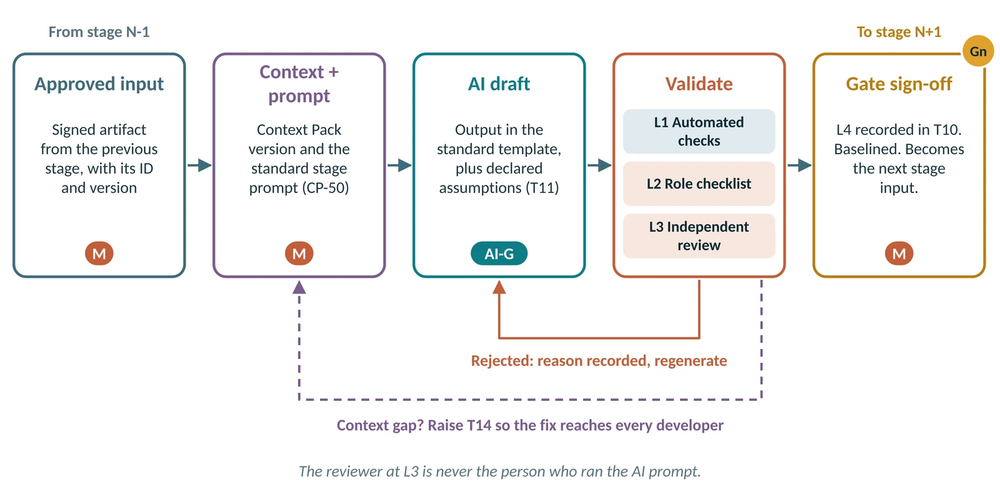
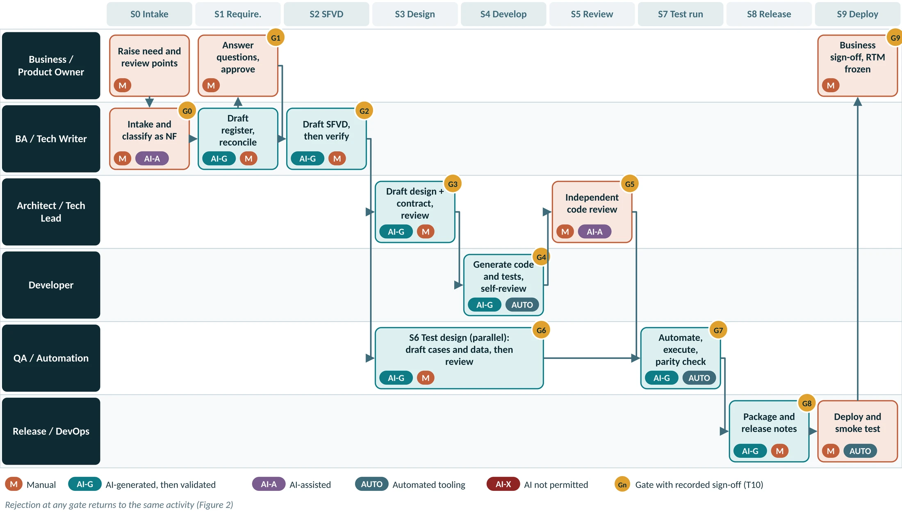
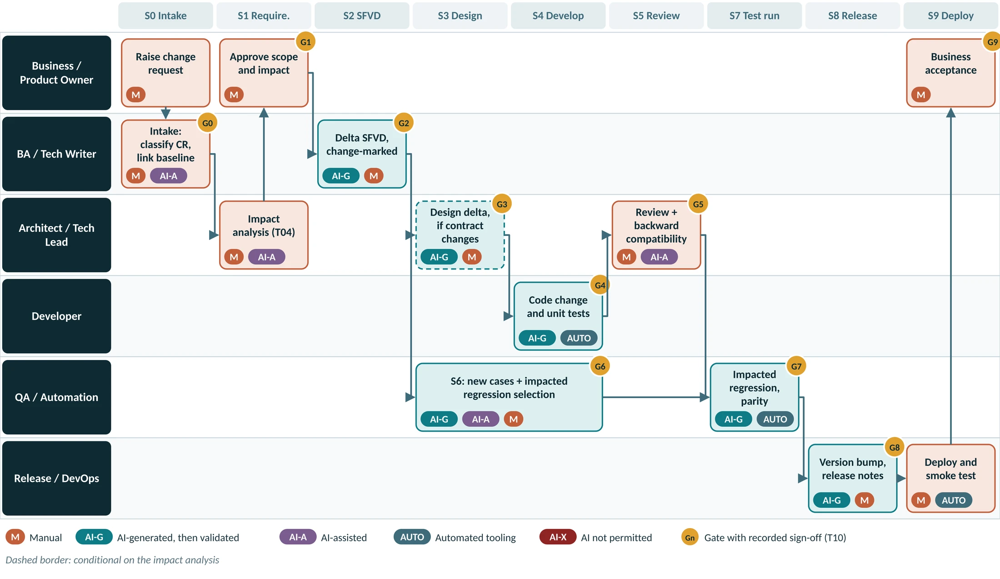
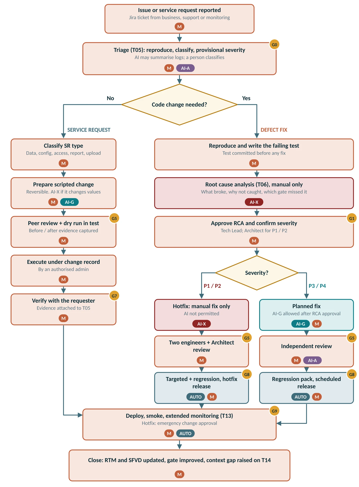
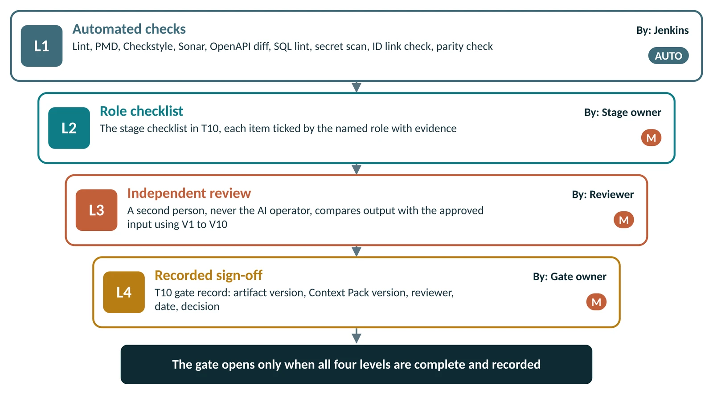
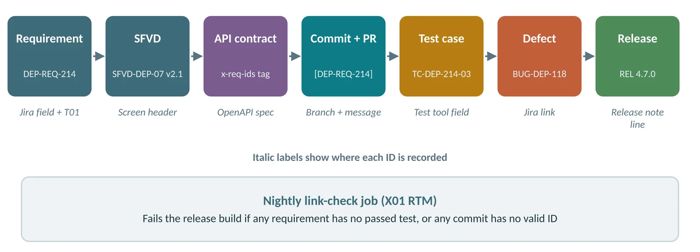
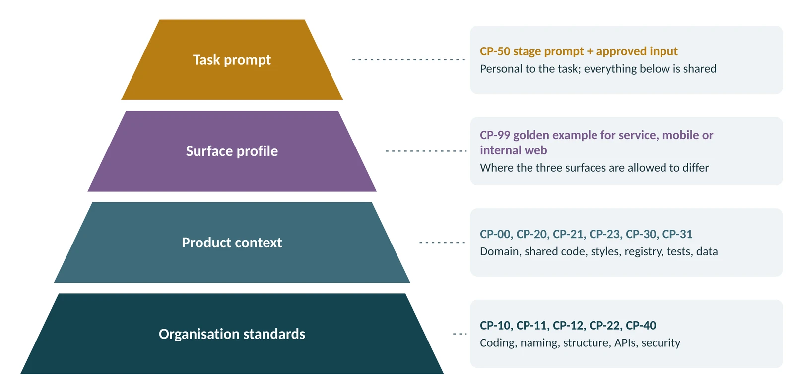
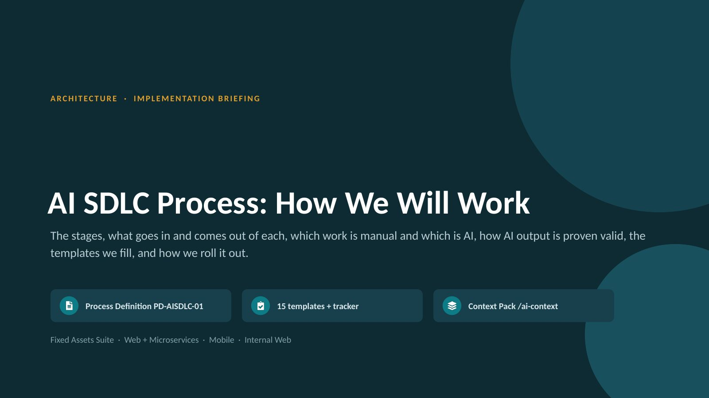

AI SDLC Process Portal
One place to read the process, check a stage, and open or download the template you need, without switching between documents.
New here? Read How to use this portal, or press ? at any time for help.
What do you need to do?
Starting a new feature
All ten stages, step by step, with who does what.
Handling a change request
Impact analysis first, then delta documents and regression.
Fixing an issue or SR
Triage, manual root cause, and what severity allows.
Looking for a template
Filter every document by stage and work type, then view or download.
Reviewing AI output
The four levels, ten techniques and the acceptance checklist.
Closing a gate
The gate checklist and sign-off for every stage.
The process at a glance
Start from your role
| If you are… | Read first | Then use |
|---|---|---|
| Product Owner or Business Analyst | Section 2, 3, 4.1 to 4.3, 5 | T01, T04, T10, T11 |
| Technical Writer | Section 2, 4.3, 6, 7 | T02, T10, T11 |
| Architect or Tech Lead | All sections; you own sections 3, 7 and 9 | T03, T04, T09, T10, T14 |
| Developer | Section 2, 4.5, 4.6, 5.3, 6, 7, 8 | T09, T11, Context Pack |
| QA or Automation Engineer | Section 2, 4.7, 4.8, 6 | T07, T08, T10, T11 |
| Release Manager or DevOps | Section 4.9, 4.10, 5.3 | T12, T13, T10 |
| Delivery Manager or Council member | Section 2, 3, 9, 10, 11 | X01, T15 |
Section numbers refer to the Word process definition (PD-AISDLC-01); every section has a page in this portal. See Process definition in the menu for the mapping.
How to use this portal
A two-minute guide to finding things, reading the codes, and viewing or downloading documents.
Finding your way
- The menu on the left follows the process: start, process, the ten stages, the three work-type flows, assurance, context, people, documents and templates. On a phone, open it with the menu button.
- Search at the top finds stages, templates, roles and terms. Try “S4”, “T04”, “parity” or “developer”.
- Every page has Previous and Next links at the bottom, so you can read the whole process in order.
- Diagrams with highlighted areas are clickable: click a stage box on the master flow to open that stage.
Tooltips and links
Codes in the text are live. Hover over or tap them to see what they mean, and click to open them.
| You see | It means | Click to |
|---|---|---|
| AI-G M | How that row is produced: AI-generated, manual, AI-assisted, automated, or AI not permitted | Hover for the definition |
| T04 | A template | Open its online view and download |
| S2 G2 | A stage and its gate | Open the stage page |
| CP-23 | A Context Pack file | Open the Context Pack page |
| V3 L3 | A validation technique or verification level | Open the validation page |
| An explanation of the section | Hover or tap |
View or download
- View online opens a read-only copy in the portal: use it to look something up.
- Download saves the Word, Excel or PowerPoint file: use it when you are going to fill it in and attach it to Jira.
- Each stage page lists the documents for that stage on the right, so you never need to hunt for a template.
Checklists on this site
Ticks on stage checklists are saved in your own browser only, so you can use them as a personal self-check. They are not a gate record: record the official decision in T10.
Keyboard shortcuts
| Key | Action |
|---|---|
| / | Jump to search |
| ? | Open this help |
| [ and ] | Previous and next page |
| ← and → | Previous and next slide in the deck viewer |
| Esc | Close a dialog, the menu or a tooltip |
Quick reference card
One row per stage: the main AI step, the three checks people most often miss, and who signs the gate.
| Stage | Main AI step | Top three human checks | Gate · signs |
|---|---|---|---|
| S0 Intake | AI-A Summarise long descriptions, e-mail threads and logs into a structured intake summary |
| G0 Delivery Manager |
| S1 Requirements | AI-G Generate the draft register: one ID per requirement, acceptance criteria, impact map, assumptions and open questions |
| G1 Product Owner |
| S2 SFVD | AI-G Generate the SFVD draft per screen: purpose, actors, flow, field table, validations, error codes, user stories, UI references |
| G2 BA Lead |
| S3 Design | AI-G Generate the design draft: service impact, OpenAPI contract, DTO and entity design, sequence diagrams, migration draft, reuse plan |
| G3 Architect |
| S4 Development | AI-G Generate code inside the existing structure, unit tests, configuration, i18n keys and migration | G4 Tech Lead | |
| S5 Code review | AI-A Generate a review aid: diff summary, standards-deviation scan, duplicate detection, missing-test hints |
| G5 Tech Lead |
| S6 Test design | AI-G Generate test cases: functional, validation, UI, flow, integration, cross-surface; positive and negative; expected results; REQ mapping; automation flag |
| G6 QA Lead |
| S7 Test execution | AI-G Generate automation scripts: page objects, locators, data-driven steps |
| G7 QA Lead |
| S8 Release | AI-G Generate release notes from commits and REQ-IDs, config diff summary and rollback steps |
| G8 Delivery Manager |
| S9 Deploy | AI-A Summarise post-deployment logs and metrics for anomalies |
| G9 Delivery Manager |
Principles, modes and AI rules
Five principles, five modes that tag every input, activity and output, and the boundary of what AI may do.
Five principles
- AI drafts, a person decides, the gate records. AI output is never a deliverable as generated. It becomes one only when a named reviewer accepts it and the gate is recorded in T10.
- Context is shared, never personal. Standards, structure, shared libraries, style classes, registries and test data live in one versioned Context Pack that every prompt loads.
- Nothing moves without an ID. Every artifact, commit, test case and defect carries its requirement, CR or SR ID. If it is not linked it does not ship.
- Reuse before create. A new utility, base method, style class, validation ID or service is justified in writing, or it is not created.
- Evidence or it did not happen. A gate passes only with a recorded artifact: checklist, scan result, approval. Verbal sign-off is not a gate.
Process modes
| Mode | Name | Meaning | Verification required |
|---|---|---|---|
| M | Manual | Performed and owned entirely by a named person. AI is not used to produce the output. | Role checklist and gate (L2, L4) |
| AI-G | AI-Generated | AI produces the draft from approved inputs and the Context Pack. A named person must validate it before it is used. It is never a deliverable as generated. | All four levels (L1 to L4) and the universal checklist |
| AI-A | AI-Assisted | A person produces the output. AI is used only to summarise, search, scan or suggest. The person decides. | The person confirms every AI suggestion before acting on it |
| AUTO | Automated | Deterministic tooling with no AI judgement: Jenkins pipeline, PMD, Sonar, OpenAPI diff, link-check jobs. | Result attached to the gate as evidence |
| AI-X | AI Not Permitted | AI must not be used for this activity under any circumstances. | Not applicable: AI must not be used |
A combined tag such as AI-G → M
AI generates the draft; a person then validates, completes and owns it. It is only usable after the person’s step.
What AI may and may not do
- Requirement register and acceptance criteria drafts
- SFVD drafts
- Design notes, OpenAPI contracts, migration drafts
- Code and unit tests (except P1 / P2 fixes)
- Test cases, test data and automation scripts
- Release notes and runbook drafts
- Fixes for P3 / P4 defects after RCA approval
- Intake and log summaries
- Duplicate and impact searches across the RTM and code
- Code review aids: diff summary, deviation scan, duplicate detection
- Regression selection suggestions for CRs
- Defect description drafts
- Post-deployment log summaries
- Classifying work type or setting severity
- Approving any gate, pull request or release
- Answering its own open questions or assumptions
- Root cause analysis for any defect
- Fixes for P1 and P2 defects
- Scripts that change cost, accumulated depreciation or NBV
- Executing deployments, rollbacks or production data changes
- Prompts containing production personal data, financial records or secrets
- Creating new validation IDs, error codes or style classes outside the registry process
Rules for every AI interaction
- Use only AI tools on the approved list in CP-40, through company accounts.
- Never put production personal data, financial records, credentials or secrets into a prompt. Use seed data from CP-31.
- Start from the approved, versioned input of the previous stage, never from memory or an unapproved draft.
- Use the stage prompt template from CP-50. Do not combine two stages in one prompt.
- Record every AI-G use in T11: tool, prompt template and version, Context Pack version, sections generated, assumptions.
- You own what AI produces for you. “The AI generated it” is not accepted at review.
- If AI repeatedly gets something wrong, raise a Context Pack change (T14); do not just fix your own copy.
Master flow and stage loop
Ten stages take every piece of work from intake to a closed, audited release. Test design (S6) runs in parallel with design and development from the moment the SFVD is baselined.
The master flow
The loop every stage follows

- Approved input: only the signed output of the previous gate, identified by ID and version.
- Context and prompt: the current Context Pack version and the stage prompt from CP-50.
- AI draft: output in the standard template, with every assumption and open question declared.
- Validate: L1 automated checks, L2 role checklist, L3 independent review.
- Gate sign-off: L4, the gate owner records the decision in T10; the output becomes the next stage input.
If the output is rejected, the reason is recorded and the stage repeats. If the cause was missing context, the AI operator also raises T14 so the error is not generated for anyone else.
Stage summary
| Stage | Key input | Key output | Output mode | Gate | Accountable |
|---|---|---|---|---|---|
| S0 Intake and Classification | Work item description and attachments | Classified Jira item: work type, ID, module, severity (Jira) | M | G0 | Delivery Manager |
| S1 Requirements and Review Points | Business requirement note and client review points | Requirement Register v1.0 with REQ-IDs and acceptance criteria (T01 Part C) | AI-G → M | G1 | Product Owner |
| S2 SFVD: Screens, Fields, Validations | Approved Requirement Register | SFVD vX.Y (T02) | AI-G → M | G2 | BA Lead |
| S3 Solution Design and Interface Contract | Finalised SFVD | Solution Design Note (T03) | AI-G → M | G3 | Architect |
| S4 Development | SFVD section, API contract and design note | Source code and unit tests (Code repository) | AI-G → M | G4 | Tech Lead |
| S5 Code Review | Pull request diff and T09 checklist | Approved pull request or review comments (Code repository) | M | G5 | Tech Lead |
| S6 Test Design | Finalised SFVD and API contract | Test Case Specification (T07) | AI-G → M | G6 | QA Lead |
| S7 Test Execution and Automation | Approved test suite | Execution report (Test management tool) | M | G7 | QA Lead |
| S8 Build and Release | Merged code and the release scope from Jira | Release package (immutable, checksummed) (Artifact repository) | AUTO | G8 | Delivery Manager |
| S9 Deploy, Verify and Close | Signed release package | Deployment record and smoke results (T13) | M | G9 | Delivery Manager |
Tailoring by work type
| Stage | New feature | Change request | Issue / SR | Notes for CR | Notes for issue / SR |
|---|---|---|---|---|---|
| S0 Intake | Full | Full | Full | Intake + baseline link | Triage form (T05) |
| S1 Requirements | Full | Delta | Conditional | Impact analysis (T04); new / revised REQ-IDs | RCA (T06) replaces requirements for defects |
| S2 SFVD | Full | Delta | Conditional | Affected sections, change-marked, version bump | Only if designed behaviour changes |
| S3 Design | Full | Conditional | Conditional | If contract, schema or cross-service change | If the fix changes a contract or schema |
| S4 Development | Full | Full | Full | Full | AI permission set by severity |
| S5 Code review | Full | Full | Full | Full + backward-compatibility check | Second reviewer for P1 / P2 |
| S6 Test design | Full | Delta | Light | New cases + impacted regression selection | Failing test first + targeted regression |
| S7 Test execution | Full | Delta | Light | New + impacted regression + smoke | Targeted + regression pack |
| S8 Release | Full | Full | Conditional | Scheduled release | Hotfix path for P1 / P2 |
| S9 Deploy | Full | Full | Full | Full | Full + extended monitoring |
Classify work and pick a path
Every work item is classified at intake (S0). The work type decides which stages apply and in what depth. Classification is manual: AI may summarise a request but never classifies it.
Classification rules
| Question asked at intake | Answer | Classify as |
|---|---|---|
| Does the capability exist in the baselined product? | No | NF: new feature or application |
| Does baselined behaviour, a rule, a screen, a report or an interface need to change on purpose? | Yes | CR: change request |
| Does the product behave differently from the baselined SFVD or requirement? | Yes | SR: defect fix |
| Is the request to change data, configuration or access with no code change? | Yes | SR: service request |
| A “defect” where the product matches the SFVD but the business now wants something else | — | Re-route as CR |
| A “service request” that turns out to need code | — | Re-route as CR or defect |
Unsure?
The Architect decides within one working day. Default to the stricter path.
The three work types
New Application / New Feature
A capability that does not exist today: a new application, module, screen set, service or integration.
e.g. Mobile RFID scanning for physical asset verification; New lease-asset module; New integration with the ERP general ledger
Enhancement / Change Request
A change to behaviour, rules, screens, reports or interfaces that already exist and are baselined.
e.g. Pro-rata daily depreciation for mid-year additions; Add cost-centre filter to the asset register report; New label template field
Issue Fix / Service Request
Something is broken (defect), or an operational request that changes data, configuration or access rather than designed behaviour.
e.g. Depreciation run posts duplicate entries for transferred assets (defect); Correct useful life for 42 assets (data SR); Add a role to a user group (access SR)
S0 Intake and Classification
Register every new work item, classify it as a New Feature, Change Request or Issue / Service Request, link it to the current baseline, and route it to the correct process path.
Entry criteria
- Work item raised in Jira by business, support or an internal team
- Requester and business contact identified
Inputs given to AI
| Input | Source / template | Prepared by | Mode |
|---|---|---|---|
| Work item description and attachments | Jira | Requester | M |
| Current baseline: RTM, SFVD versions, release history | X01 Tracker, document repository | Business Analyst | M |
| Logs, screenshots, error references (issues only) | Support, monitoring tools | Support | M |
| Classification rules | Section 3.4 of this document | — | M |
Activities
| # | Activity | Performed by | Mode |
|---|---|---|---|
| 1 | Log the item with requester, module, surface(s) and business priority | Requester / BA | M |
| 2 | Summarise long descriptions, e-mail threads and logs into a structured intake summary | BA / Triage Lead | AI-A |
| 3 | Search the RTM and backlog for duplicates and related items | BA | AI-A |
| 4 | Classify the work type (NF / CR / SR); assign ID and module prefix | BA (Architect if unclear) | M |
| 5 | For issues: set provisional severity P1 to P4 | Triage Lead | M |
| 6 | Assign the accountable owner and process path; record Gate G0 | Delivery Manager | M |
Outputs
| Output | Template / location | Mode | Owner |
|---|---|---|---|
| Classified Jira item: work type, ID, module, severity | Jira | M | BA |
| Intake summary | T01 Part A (NF/CR) or T05 (SR) | AI-A → M | BA / Triage Lead |
| Duplicate and related-item links | Jira links | AI-A → M | BA |
| Gate G0 record | T10 | M | Delivery Manager |
How the AI output is validated
| Level | What is applied in this stage |
|---|---|
| L1 Automated | Jira mandatory-field validation (work type, module, requester). |
| L2 + L3 Techniques | V1 Source cross-check, V2 Assumption register review. |
| How to apply | The AI intake summary is compared line by line with the original request; any statement not in the source is removed. Each suggested duplicate is opened and confirmed by a person. |
| L4 Sign-off | Gate G0 recorded in T10 by Delivery Manager. |
Manual review checklist
G0 Exit gate
G0 Intake approved: item classified, ID assigned, owner named, process path selected.
AI rule: AI may summarise and search. AI must not classify the work type or set severity.
RACI
| Responsible | Accountable | Consulted | Informed |
|---|---|---|---|
| BA / Triage Lead | Delivery Manager | Architect | Requester |
S1 Requirements and Review Points
Turn the business need into an approved, uniquely identified requirement register with acceptance criteria. This register is the root of all traceability.
Entry criteria
Inputs given to AI
| Input | Source / template | Prepared by | Mode |
|---|---|---|---|
| Business requirement note and client review points | T01 Part B | Business / Product Owner | M |
| Current workflow, screen inventory and report list | Existing SFVD, live product | BA | M |
| Domain glossary: asset classes, SLM / WDV, useful life, CWIP, impairment, disposal, label formats | CP-00 | Architect | M |
| Integration, validation and non-functional expectations | Business, Architect | BA | M |
| Context Pack sections CP-00, CP-40 and stage prompt P-S1 | /ai-context | — | M |
Activities
| # | Activity | Performed by | Mode |
|---|---|---|---|
| 1 | Prepare the business requirement note with review points | BA with Business | M |
| 2 | Generate the draft register: one ID per requirement, acceptance criteria, impact map, assumptions and open questions | BA using AI | AI-G |
| 3 | Reconcile the register with the source: every statement mapped, nothing invented | BA | M |
| 4 | Walk through open questions with the business and record answers | BA, Product Owner | M |
| 5 | Verify domain and statutory rules (depreciation, capitalisation thresholds, audit retention) | BA with domain SME | M |
| 6 | Approve the register, freeze REQ-IDs and create RTM rows | Product Owner | M |
Outputs
| Output | Template / location | Mode | Owner |
|---|---|---|---|
| Requirement Register v1.0 with REQ-IDs and acceptance criteria | T01 Part C | AI-G → M | BA |
| Assumption and open-question log, fully resolved | T11 | AI-G → M | BA |
| Impact map across microservices, mobile and internal web | T01 Part D | AI-G → M | BA |
| RTM rows created | X01 RTM sheet | M | BA |
| Gate G1 record | T10 | M | Product Owner |
How the AI output is validated
| Level | What is applied in this stage |
|---|---|
| L1 Automated | Template completeness check; REQ-ID format and uniqueness check in the RTM. |
| L2 + L3 Techniques | V1 Source cross-check, V2 Assumption register review, V4 Count reconciliation, V7 Independent re-derivation. |
| How to apply | Every requirement must trace to a sentence in the source note, and every sentence in the note must be covered. Differences in the count are explained in writing. A domain SME re-derives two worked examples by hand. |
| L4 Sign-off | Gate G1 recorded in T10 by Product Owner. |
Manual review checklist
G1 Exit gate
G1 Requirements approved: register v1.0 signed by the Product Owner, REQ-IDs frozen, RTM rows created.
AI rule: AI may structure, de-duplicate and draft acceptance criteria. AI must not answer its own open questions or decide scope.
RACI
| Responsible | Accountable | Consulted | Informed |
|---|---|---|---|
| Business Analyst | Product Owner | Architect, QA Lead | Development, Release |
S2 SFVD: Screens, Fields, Validations
Specify every screen, field, validation, error message and business flow precisely enough that development and testing work from the same truth.
Entry criteria
- G1 passed
Inputs given to AI
| Input | Source / template | Prepared by | Mode |
|---|---|---|---|
| Approved Requirement Register | T01 | BA | M |
| SFVD template and two approved SFVDs as worked examples | T02, CP-99 | Tech Writer | M |
| Data dictionary and entity relationship model | Architecture repository | Architect | M |
| Validation and error-code registry | CP-23 | Architect | M |
| UI style guide and component catalogue | CP-21 | UI Lead | M |
| Naming conventions | CP-11 | — | M |
| Existing SFVD (CR: affected sections only) | Document repository | Tech Writer | M |
Activities
| # | Activity | Performed by | Mode |
|---|---|---|---|
| 1 | Generate the SFVD draft per screen: purpose, actors, flow, field table, validations, error codes, user stories, UI references | Tech Writer using AI | AI-G |
| 2 | Verify field by field against the data dictionary | Tech Writer | M |
| 3 | Verify every validation ID and error code exists in the registry; raise a registry change for genuinely new ones | Tech Writer, Architect | M |
| 4 | Verify reuse call-outs: the named components and validators exist and fit | Architect | M |
| 5 | Business walkthrough of flows and screens | BA, Product Owner | M |
| 6 | Baseline the SFVD; update the requirement-screen-field matrix; release to Dev and QA the same day | Tech Writer | M |
Outputs
| Output | Template / location | Mode | Owner |
|---|---|---|---|
| SFVD vX.Y | T02 | AI-G → M | Tech Writer |
| RTM screen and field columns | X01 RTM sheet | M | Tech Writer |
| Registry change requests, if any | T14 | M | Architect |
| Gate G2 record | T10 | M | BA Lead |
How the AI output is validated
| Level | What is applied in this stage |
|---|---|
| L1 Automated | Template structure check; Screen-to-REQ-ID link check; Registry lookup script for validation and error IDs (manual lookup until scripted). |
| L2 + L3 Techniques | V1 Source cross-check, V2 Assumption register review, V3 Registry lookup, V4 Count reconciliation, V5 Golden-example comparison. |
| How to apply | Every identifier the AI writes (field, validation ID, error code, style class, component) is looked up in the registry or data dictionary. An identifier that cannot be found is treated as invented and the section is rejected. |
| L4 Sign-off | Gate G2 recorded in T10 by BA Lead. |
Manual review checklist
G2 Exit gate
G2 SFVD baselined: matrix updated, document released to Development and QA on the same day.
AI rule: AI may draft. AI must not create new fields, validation IDs, error codes or style classes.
RACI
| Responsible | Accountable | Consulted | Informed |
|---|---|---|---|
| Tech Writer / BA | BA Lead | Architect, QA Lead, Product Owner | Development, Mobile, Release |
S3 Solution Design and Interface Contract
Decide how the change is built across services and surfaces, and agree the API contract before any code is written.
Entry criteria
- G2 passed
- For CR and SR: only when the impact analysis or RCA shows a contract, schema or cross-service change
Inputs given to AI
| Input | Source / template | Prepared by | Mode |
|---|---|---|---|
| Finalised SFVD | T02 | — | M |
| Service map, bounded contexts and event topics | Architecture repository, CP-22 | Architect | M |
| Existing OpenAPI specifications | Contract repository | Tech Lead | M |
| Database schema and migration standard | CP-10, CP-11 | DBA | M |
| Shared library index | CP-20 | Architect | M |
| Non-functional, security and authorisation model | CP-40 | Security | M |
Activities
| # | Activity | Performed by | Mode |
|---|---|---|---|
| 1 | Generate the design draft: service impact, OpenAPI contract, DTO and entity design, sequence diagrams, migration draft, reuse plan | Tech Lead using AI | AI-G |
| 2 | Run OpenAPI lint and diff, and SQL migration lint | Jenkins | AUTO |
| 3 | Architecture review: boundaries, reuse, backward compatibility, versioning | Architect | M |
| 4 | Database review: indexes, migration, rollback | DBA | M |
| 5 | Security review: authorisation, PII, audit fields | Security | M |
| 6 | Merge the contract to the contract repository; record the design decision | Tech Lead | M |
Outputs
| Output | Template / location | Mode | Owner |
|---|---|---|---|
| Solution Design Note | T03 | AI-G → M | Tech Lead |
| OpenAPI contract | Contract repository | AI-G → M | Tech Lead |
| Migration and rollback scripts (draft) | Code repository | AI-G → M | DBA |
| Architecture decision record | T03 section 8 | M | Architect |
| Gate G3 record | T10 | M | Architect |
How the AI output is validated
| Level | What is applied in this stage |
|---|---|
| L1 Automated | OpenAPI lint; OpenAPI diff against the previous version; SQL migration lint. |
| L2 + L3 Techniques | V2 Assumption register review, V3 Registry lookup, V5 Golden-example comparison, V6 Deterministic tool checks, V9 Explain-back. |
| How to apply | Every class, library or service the design proposes to reuse is checked in the shared library index. The OpenAPI diff is the evidence for backward compatibility; a breaking change without a version bump is rejected automatically. |
| L4 Sign-off | Gate G3 recorded in T10 by Architect. |
Manual review checklist
G3 Exit gate
G3 Design approved: contract merged to the contract repository before coding starts.
AI rule: AI may draft designs and contracts. AI must not merge a contract or approve a breaking change.
RACI
| Responsible | Accountable | Consulted | Informed |
|---|---|---|---|
| Tech Lead | Architect | DBA, Security, QA Lead | All development teams |
S4 Development
Implement the approved design inside the existing structure, reusing shared code, with unit tests.
Entry criteria
- G3 passed, or G1 / RCA approval for a change without design impact
- Task carries a REQ-ID or defect ID
Inputs given to AI
| Input | Source / template | Prepared by | Mode |
|---|---|---|---|
| SFVD section, API contract and design note | T02, T03 | — | M |
| Coding standards, naming conventions, folder structure | CP-10, CP-11, CP-12 | — | M |
| Shared library index and UI style guide | CP-20, CP-21 | — | M |
| Golden reference example for the surface | CP-99 | — | M |
| REQ-ID or defect ID | Jira | — | M |
| Static analysis rule set | Jenkins configuration | — | M |
Activities
| # | Activity | Performed by | Mode |
|---|---|---|---|
| 1 | Create the branch named with the ID | Developer | M |
| 2 | Generate code inside the existing structure, unit tests, configuration, i18n keys and migration | Developer using AI | AI-G |
| 3 | Search the shared library before accepting any new class, utility or CSS | Developer | M |
| 4 | Run the local build, unit tests, PMD and Sonar scan | Build tooling | AUTO |
| 5 | Self-review against the T09 checklist; remove unused and alternative code | Developer | M |
| 6 | Raise a pull request of 400 lines or fewer with T09 and the AI Usage Declaration | Developer | M |
Outputs
| Output | Template / location | Mode | Owner |
|---|---|---|---|
| Source code and unit tests | Code repository | AI-G → M | Developer |
| Pull request with completed checklist | T09 | M | Developer |
| AI Usage Declaration in the pull request | T11 (short form) | M | Developer |
| CI results | Jenkins | AUTO | Developer |
How the AI output is validated
| Level | What is applied in this stage |
|---|---|
| L1 Automated | Compile and unit tests; PMD and Checkstyle; Sonar quality gate; Coverage on new code; Duplication; Secret scan; Naming lint. |
| L2 + L3 Techniques | V3 Registry lookup, V5 Golden-example comparison, V6 Deterministic tool checks, V8 Execution evidence, V9 Explain-back. |
| How to apply | Deterministic gates catch standards, duplication and security problems; the developer then proves understanding through explain-back. For a defect fix the failing test must be committed before the fix. |
| L4 Sign-off | Gate G4 recorded in T10 by Tech Lead. |
Manual review checklist
G4 Exit gate
G4 Pull request ready: CI green, checklist complete, AI usage declared.
AI rule: AI may generate code and tests. For P1 and P2 defects AI is not permitted (see section 5.3).
RACI
| Responsible | Accountable | Consulted | Informed |
|---|---|---|---|
| Developer | Tech Lead | Architect | QA |
S5 Code Review
Independent human verification that the code is correct, consistent, reusable and secure before it is merged.
Entry criteria
- G4 passed
Inputs given to AI
| Input | Source / template | Prepared by | Mode |
|---|---|---|---|
| Pull request diff and T09 checklist | Code repository | Developer | M |
| SFVD section and API contract | T02, T03 | — | M |
| Standards and shared library index | CP-10 to CP-22 | — | M |
| Sonar results and contract diff | Jenkins | — | AUTO |
Activities
| # | Activity | Performed by | Mode |
|---|---|---|---|
| 1 | Generate a review aid: diff summary, standards-deviation scan, duplicate detection, missing-test hints | Reviewer using AI | AI-A |
| 2 | Confirm the CI quality gate result | Jenkins | AUTO |
| 3 | Review business logic against the SFVD line by line | Reviewer | M |
| 4 | Check reuse, layering, naming and contract adherence | Reviewer | M |
| 5 | Security and data-access review (Security consulted for sensitive changes) | Reviewer | M |
| 6 | Approve or request changes; record the decision | Reviewer | M |
Outputs
| Output | Template / location | Mode | Owner |
|---|---|---|---|
| Approved pull request or review comments | Code repository | M | Reviewer |
| Merge with REQ-ID in the message | Code repository | M | Reviewer |
| Gate G5 record (pull request approval) | Code repository / T10 | M | Tech Lead |
How the AI output is validated
| Level | What is applied in this stage |
|---|---|
| L1 Automated | Sonar quality gate; Duplication and coverage thresholds; OpenAPI diff; Pull request size check. |
| L2 + L3 Techniques | V6 Deterministic tool checks, V9 Explain-back. |
| How to apply | The AI review aid is advisory. Each AI finding is verified by the reviewer before it is raised, and the absence of AI findings is never treated as approval. |
| L4 Sign-off | Gate G5 recorded in T10 by Tech Lead. |
Manual review checklist
G5 Exit gate
G5 Code approved and merged by an independent reviewer.
AI rule: AI may assist the reviewer. AI never approves or merges.
RACI
| Responsible | Accountable | Consulted | Informed |
|---|---|---|---|
| Reviewer (peer or Tech Lead) | Tech Lead | Architect, Security | QA, Product Owner |
S6 Test Design
Derive complete test cases and test data from the baselined SFVD and contract, in parallel with design and development.
Entry criteria
Inputs given to AI
| Input | Source / template | Prepared by | Mode |
|---|---|---|---|
| Finalised SFVD and API contract | T02, contract repository | — | M |
| Test case template and ID convention | T07, CP-30 | QA Lead | M |
| Test data and seed data specification | T08, CP-31 | QA Lead | M |
| Boundary and negative scenario pattern library | CP-30 | QA Lead | M |
| Index of the existing regression suite | Test management tool | QA | M |
| Device, browser and role matrix | CP-30 | QA Lead | M |
Activities
| # | Activity | Performed by | Mode |
|---|---|---|---|
| 1 | Generate test cases: functional, validation, UI, flow, integration, cross-surface; positive and negative; expected results; REQ mapping; automation flag | QA Engineer using AI | AI-G |
| 2 | Generate test data requirements mapped to the seed structure | QA Engineer using AI | AI-G |
| 3 | Coverage reconciliation: every REQ-ID and every field validation covered | QA Engineer | M |
| 4 | Remove duplicates of existing regression cases | QA Engineer | M |
| 5 | Verify expected results against the SFVD; SME re-calculates financial values | QA Lead, domain SME | M |
| 6 | Approve the suite; baseline it in the test management tool; update the RTM | QA Lead | M |
Outputs
| Output | Template / location | Mode | Owner |
|---|---|---|---|
| Test Case Specification | T07 | AI-G → M | QA Engineer |
| Test Data Specification | T08 | AI-G → M | QA Engineer |
| RTM test columns | X01 RTM sheet | M | QA Engineer |
| Gate G6 record | T10 | M | QA Lead |
How the AI output is validated
| Level | What is applied in this stage |
|---|---|
| L1 Automated | RTM coverage check: REQ-IDs without a test case are flagged; Duplicate test title check. |
| L2 + L3 Techniques | V1 Source cross-check, V2 Assumption register review, V4 Count reconciliation, V7 Independent re-derivation. |
| How to apply | Counts are reconciled (REQ-IDs and field validations in, test cases out). Expected results for depreciation, label and audit scenarios are recalculated by a domain SME independently of the AI. |
| L4 Sign-off | Gate G6 recorded in T10 by QA Lead. |
Manual review checklist
G6 Exit gate
G6 Test suite approved and baselined in the test management tool.
AI rule: AI may draft cases and data. AI must not decide expected results for financial calculations without SME verification.
RACI
| Responsible | Accountable | Consulted | Informed |
|---|---|---|---|
| QA Engineer | QA Lead | BA, Developer | Product Owner, Release |
S7 Test Execution and Automation
Execute the approved suite, automate the agreed cases, and prove that nothing was silently dropped.
Entry criteria
Inputs given to AI
| Input | Source / template | Prepared by | Mode |
|---|---|---|---|
| Approved test suite | Test management tool | QA Lead | M |
| Seed data script | CP-31 / T08 | QA | M |
| Environment configuration and test accounts | Environment matrix | DevOps | M |
| Automation framework patterns and locator standard | CP-30 | Automation Lead | M |
| Existing regression pack | Automation repository | QA | M |
Activities
| # | Activity | Performed by | Mode |
|---|---|---|---|
| 1 | Load seed data | Seed script | AUTO |
| 2 | Generate automation scripts: page objects, locators, data-driven steps | Automation Engineer using AI | AI-G |
| 3 | Review scripts one-to-one against approved cases; verify assertions | Automation Engineer, QA Lead | M |
| 4 | Execute manual and automated tests | QA | M |
| 5 | Draft defect reports from failures | QA using AI | AI-A |
| 6 | Run the automation parity check; record deferrals with reasons | QA Lead | AUTO |
Outputs
| Output | Template / location | Mode | Owner |
|---|---|---|---|
| Execution report | Test management tool | M | QA |
| Automated scripts added to the regression pack | Automation repository | AI-G → M | Automation Engineer |
| Defects linked to REQ-IDs | Jira | AI-A → M | QA |
| Automation parity report | X01 / Jenkins | AUTO | QA Lead |
| Gate G7 record | T10 | M | QA Lead |
How the AI output is validated
| Level | What is applied in this stage |
|---|---|
| L1 Automated | Parity check: approved = executed + automated + formally deferred; Flaky test detection by re-run; RTM test-status update. |
| L2 + L3 Techniques | V4 Count reconciliation, V8 Execution evidence. |
| How to apply | On a sample of AI-generated scripts the reviewer deliberately changes one expected value and confirms the script fails. A script that still passes has no real assertion and is rejected. |
| L4 Sign-off | Gate G7 recorded in T10 by QA Lead. |
Manual review checklist
G7 Exit gate
G7 Test exit: parity 100%, no open P1 or P2 defects, evidence attached.
AI rule: AI may draft scripts and defect descriptions. AI must not mark a test as passed.
RACI
| Responsible | Accountable | Consulted | Informed |
|---|---|---|---|
| Automation Engineer / QA | QA Lead | Developer | Product Owner, Release |
S8 Build and Release
Produce a signed, immutable and traceable release package.
Entry criteria
- G7 passed
Inputs given to AI
| Input | Source / template | Prepared by | Mode |
|---|---|---|---|
| Merged code and the release scope from Jira | Jira, code repository | Release Manager | M |
| Version and branching policy | CP-10 | — | M |
| Release note template | T12 | — | M |
| Environment configuration matrix | DevOps | DevOps | M |
| Migration and rollback scripts | Code repository | DBA | M |
| RTM snapshot | X01 | QA Lead | AUTO |
Activities
| # | Activity | Performed by | Mode |
|---|---|---|---|
| 1 | Build the immutable artifact with a version tag | Jenkins | AUTO |
| 2 | Generate release notes from commits and REQ-IDs, config diff summary and rollback steps | Release Manager using AI | AI-G |
| 3 | Reconcile release notes with the RTM and Jira scope | Release Manager | M |
| 4 | Verify configuration differences for each environment | DevOps | M |
| 5 | Migration dry run on a production-like copy | DBA / DevOps | M |
| 6 | Record release approval | Delivery Manager | M |
Outputs
| Output | Template / location | Mode | Owner |
|---|---|---|---|
| Release package (immutable, checksummed) | Artifact repository | AUTO | DevOps |
| Release Note | T12 | AI-G → M | Release Manager |
| Deployment Runbook (draft) | T13 | AI-G → M | DevOps |
| Gate G8 record | T10 | M | Delivery Manager |
How the AI output is validated
| Level | What is applied in this stage |
|---|---|
| L1 Automated | Version uniqueness; Artifact checksum; RTM link check: every REQ in scope has passed tests. |
| L2 + L3 Techniques | V1 Source cross-check, V4 Count reconciliation, V6 Deterministic tool checks. |
| How to apply | Three counts must agree: Jira scope, release-note lines and RTM rows. Each release-note line is traced to a merged pull request. |
| L4 Sign-off | Gate G8 recorded in T10 by Delivery Manager. |
Manual review checklist
G8 Exit gate
G8 Release approved: signed package, RTM snapshot attached.
AI rule: AI may draft notes and runbooks. AI must not trigger a build promotion.
RACI
| Responsible | Accountable | Consulted | Informed |
|---|---|---|---|
| Release Manager | Delivery Manager | DevOps, Architect, QA Lead | All teams |
S9 Deploy, Verify and Close
Deploy safely, prove it works in production, and close the loop with a frozen audit baseline.
Entry criteria
- G8 passed
- Deployment window approved
Inputs given to AI
| Input | Source / template | Prepared by | Mode |
|---|---|---|---|
| Signed release package | Artifact repository | DevOps | M |
| Deployment runbook and smoke checklist | T13 | DevOps | M |
| Backup confirmation and rollback plan | T13 | DBA / DevOps | M |
| Monitoring dashboards and alert thresholds | Monitoring tools | DevOps | M |
Activities
| # | Activity | Performed by | Mode |
|---|---|---|---|
| 1 | Pre-deployment validation and backup confirmation | DevOps | M |
| 2 | Deploy through the Jenkins pipeline following the runbook | Jenkins | AUTO |
| 3 | Execute the smoke pack | QA | M |
| 4 | Summarise post-deployment logs and metrics for anomalies | DevOps using AI | AI-A |
| 5 | Monitor for the agreed window; decide go or rollback | DevOps, Delivery Manager | M |
| 6 | Business sign-off; freeze the RTM; close Jira items; raise context-gap changes | PO, BA, Architect | M |
Outputs
| Output | Template / location | Mode | Owner |
|---|---|---|---|
| Deployment record and smoke results | T13 | M | DevOps / QA |
| Monitoring summary | T13 | AI-A → M | DevOps |
| Business sign-off | T10 | M | Product Owner |
| Frozen RTM for the release | X01 | M | BA |
| Context Pack change requests | T14 | M | Architect |
How the AI output is validated
| Level | What is applied in this stage |
|---|---|
| L1 Automated | Pipeline deployment log; Health checks; Alerting. |
| L2 + L3 Techniques | V8 Execution evidence. |
| How to apply | The AI log summary is checked against the dashboards; an anomaly is confirmed in the source logs before any action. "No anomalies" from AI is never accepted without the dashboard check. |
| L4 Sign-off | Gate G9 recorded in T10 by Delivery Manager. |
Manual review checklist
G9 Exit gate
G9 Release closed: smoke passed, monitoring clean, RTM frozen.
AI rule: AI may summarise logs. AI must not execute deployment or rollback actions.
RACI
| Responsible | Accountable | Consulted | Informed |
|---|---|---|---|
| DevOps | Delivery Manager | QA Lead, Product Owner, Architect | All teams |
New application or feature
A capability that does not exist today: a new application, module, screen set, service or integration. All ten stages run in full.

Step by step
| # | Stage | Activity | Who | Mode | Output | Gate |
|---|---|---|---|---|---|---|
| 1 | S0 | Raise the need with review points | Business | M | T01 Part A | |
| 2 | S0 | Intake and classify as NF; register module prefix if new | BA | M + AI-A | Jira item | G0 |
| 3 | S1 | Draft register, reconcile, resolve open questions | BA | AI-G → M | T01, T11 | |
| 4 | S1 | Approve register; freeze REQ-IDs | Product Owner | M | T10 | G1 |
| 5 | S2 | Draft SFVD, verify fields and registry IDs | Tech Writer | AI-G → M | T02, T11 | G2 |
| 6 | S3 | Draft design and contract; architecture, DB and security review | Tech Lead, Architect | AI-G → M | T03 | G3 |
| 7 | S6 | Draft test cases and data; SME verification (starts at G2) | QA | AI-G → M | T07, T08 | G6 |
| 8 | S4 | Generate code and tests; self-review; pull request | Developer | AI-G → M | T09, T11 | G4 |
| 9 | S5 | Independent code review | Reviewer | M + AI-A | Merged PR | G5 |
| 10 | S7 | Automate and execute; parity check | QA, Automation | AI-G → M + AUTO | Parity report | G7 |
| 11 | S8 | Package, release notes, runbook | Release Manager | AI-G → M | T12, T13 | G8 |
| 12 | S9 | Deploy, smoke, monitor, business sign-off | DevOps, QA, PO | M + AUTO | T13, T10 | G9 |
Rules specific to new features
- A new module gets its prefix registered in CP-00 before S1 starts, so IDs are valid from the first requirement.
- The first feature on a new surface or service creates that surface’s golden example (CP-99) during S3 and S4. The Architect reviews it; later features imitate it.
- Any new shared component, validator or style class is added to CP-20, CP-21 or CP-23 in the same release, through T14.
- Architecture spikes may use AI freely, but spike code is never merged. Findings are recorded in T03.
- Non-functional baselines are fixed at S1: asset volumes, depreciation run window, month-end close time, mobile offline duration.
Examples
- Mobile RFID scanning for physical asset verification
- New lease-asset module
- New integration with the ERP general ledger
Enhancement or change request
A change to behaviour, rules, screens, reports or interfaces that already exist and are baselined. A CR starts with an impact analysis (T04); documents are updated as deltas and regression is selected from the RTM.

Minor or Major?
| Class | Criteria (any one is enough for Major) | Effect on the flow |
|---|---|---|
| Minor | No contract or schema change; one surface; estimated at five working days or fewer | S3 not run; design notes recorded in T04 section 6. S6 and S7 delta. |
| Major | Contract or schema change; more than one surface; more than five working days; any change to a financial calculation | S3 run in full with contract versioning and migration review. SME re-derivation mandatory at S6. |
Step by step
| # | Stage | Activity | Who | Mode | Output | Gate |
|---|---|---|---|---|---|---|
| 1 | S0 | Raise CR; link to the baselined REQ-IDs and SFVD version | Requester, BA | M + AI-A | Jira CR | G0 |
| 2 | S1 | Impact analysis: AI searches RTM and code; Architect confirms each item | Architect, BA | M + AI-A | T04 | |
| 3 | S1 | Approve scope, effort, impact and CR class | Product Owner | M | T04, T10 | G1 |
| 4 | S2 | Update affected SFVD sections with change marks; bump version | Tech Writer | AI-G → M | T02 delta, T11 | G2 |
| 5 | S3 | Major CR only: design delta, contract version, migration | Tech Lead, Architect | AI-G → M | T03 | G3 |
| 6 | S6 | New cases + regression selection proposed from RTM; QA Lead confirms | QA | AI-G + AI-A → M | T07, T08 | G6 |
| 7 | S4 | Code change and unit tests | Developer | AI-G → M | T09, T11 | G4 |
| 8 | S5 | Review including backward compatibility | Reviewer | M + AI-A | Merged PR | G5 |
| 9 | S7 | Execute new and impacted regression; parity | QA | AI-G → M + AUTO | Parity report | G7 |
| 10 | S8 | Version bump, release notes listing the CR | Release Manager | AI-G → M | T12 | G8 |
| 11 | S9 | Deploy, smoke, business acceptance | DevOps, PO | M + AUTO | T13, T10 | G9 |
Rules specific to change requests
- No CR is approved without a completed T04. AI may search the RTM and code for impact, but the Architect confirms every impacted item.
- A changed requirement keeps its ID with a revision suffix (DEP-REQ-214.r2). New behaviour gets a new ID. Retired requirements are marked retired, never deleted.
- The SFVD is updated in place with change marks and a minor version bump; the revision table lists the CR ID and changed sections.
- Regression selection: AI proposes impacted cases from the RTM and the changed files; the QA Lead confirms. The minimum is impacted cases plus smoke plus the critical-path pack (depreciation run, month-end close, label print, verification sync).
- Mobile apps in the field cannot all be updated at once. APIs must keep serving the previous mobile release (N-1) until the Council retires it.
- For changed financial rules, the PO and Finance decide whether the change is prospective or retrospective. A retrospective change needs Finance approval recorded in T04.
Issue fix or service request
Triage (T05) decides whether code is needed. If not, it is a scripted, reviewed and reversible service request. If it is, it is a defect: root cause analysis is always manual, and severity decides whether AI may help with the fix.

Severity and AI permission
| Severity | Definition | Response | AI permission | Review | Release path |
|---|---|---|---|---|---|
| P1 Critical | Production down, financial misstatement (e.g. wrong depreciation posted to ledger), data loss or security breach | Immediate; hotfix | AI-X for RCA and fix. AI-A only to summarise logs. | Two engineers + Architect | Emergency change |
| P2 High | Major function impaired; workaround is costly or risky | Hotfix within SLA | AI-X for RCA and fix. AI-A only to summarise logs. | Two engineers | Hotfix release |
| P3 Medium | Function impaired; acceptable workaround exists | Next scheduled release | RCA manual. Fix AI-G permitted after RCA approval. | Independent reviewer | Scheduled release |
| P4 Low | Cosmetic or minor inconvenience | Planned | RCA manual (short form). Fix AI-G permitted. | Independent reviewer | Scheduled release |
Service request types
| Type | Examples | Controls |
|---|---|---|
| Data correction | Fix asset master records, re-run depreciation for a period, correct location or custodian | Scripted, reversible, before/after evidence. Scripts that change cost, accumulated depreciation or NBV are AI-X; other scripts AI-G with peer review and dry run. |
| Configuration change | Asset class useful life, depreciation rate table, label template, approval limits | Change record with old and new values; peer review; verification in test first. AI-A only. |
| Access and role change | Add or remove users, roles, location access | Approved by data owner; executed by admin; AI-X. |
| Report or export tweak | Column order, filter default, format | If code changes: re-route as a CR. If configuration only: change record and verification. |
| Bulk master-data upload | New asset batch, transfer batch | Upload template validation; sample verification of 10% or 20 rows, whichever is greater. AI-A for validation summaries. |
Step by step: defect fix
| # | Stage | Activity | Who | Mode | Output | Gate |
|---|---|---|---|---|---|---|
| 1 | S0 | Triage: reproduce, classify, provisional severity | Triage Lead | M + AI-A | T05 | G0 |
| 2 | S4 | Write the failing test that reproduces the defect | Developer | M | Test in branch | |
| 3 | S1 | Root cause analysis: cause, why not caught, gate missed | Developer, Tech Lead | AI-X | T06 | |
| 4 | S1 | Approve RCA; confirm severity and AI permission | Tech Lead (Architect for P1/P2) | M | T06, T10 | G1 |
| 5 | S2 | Update SFVD only if designed behaviour changes | Tech Writer | AI-G → M | T02 delta | |
| 6 | S4 | Fix: P1/P2 manual only; P3/P4 AI-G allowed | Developer | AI-X / AI-G → M | T09, T11 | G4 |
| 7 | S5 | Review: two engineers + Architect for P1/P2 | Reviewers | M | Merged PR | G5 |
| 8 | S7 | Failing test passes; targeted + regression pack | QA | AUTO + M | Report | G7 |
| 9 | S8 | Hotfix (P1/P2) or scheduled release (P3/P4) | Release Manager | AI-G → M | T12 | G8 |
| 10 | S9 | Deploy, smoke, extended monitoring; close | DevOps, QA | M + AUTO | T13, T10 | G9 |
Step by step: service request
| # | Stage | Activity | Who | Mode | Output | Gate |
|---|---|---|---|---|---|---|
| 1 | S0 | Triage and classify SR type | Triage Lead | M + AI-A | T05 Part A | G0 |
| 2 | S4 | Prepare scripted, reversible change with rollback | Developer / Admin | M or AI-G → M | T05 Part C | |
| 3 | S5 | Peer review and dry run in test; before/after evidence | Peer reviewer | M | T05 Part D | G5 |
| 4 | S9 | Execute under change record | Authorised admin | M | Change record | |
| 5 | S9 | Verify with requester; attach evidence; close | Requester, Triage Lead | M | T05 Part E | G9 |
Rules specific to issues and service requests
- Reproduce first. The failing test is committed before the fix and stays in the regression pack.
- Root cause analysis is always manual (AI-X). AI may summarise logs to help, but the cause is written by the engineer.
- Every RCA names the gate that should have caught the defect. That gate’s checklist, the Context Pack or the regression pack is improved, or a waiver is logged.
- Hotfix branches are cut from the release tag and merged back to the main branch after release.
- Scripts that change cost, accumulated depreciation or NBV are AI-X, need two reviewers and a dry run on a production-like copy.
- Production data and configuration are changed only by an authorised admin under a change record, never directly by a developer.
- A service request that needs code, or that reveals a defect, is re-routed as a CR or a defect.
Validating AI output
AI output fails in predictable ways: invented identifiers, silent omissions, drift from house standards, and domain rules that look right and are wrong. Validation is a fixed set of levels and techniques, each aimed at one failure, applied the same way by everyone.
Four levels of verification

| Level | Who | What it proves | Evidence |
|---|---|---|---|
| L1 Automated | Jenkins and tools | Objective rules are met: standards, quality, security, contract compatibility, ID links, parity | Pipeline result link in T10 |
| L2 Role checklist | The stage owner | Every stage-specific check has been made by the accountable role | Ticked checklist in T10 |
| L3 Independent review | A reviewer who is not the AI operator | The output matches the approved input, with nothing invented or missing | Reviewer name and findings in T10 |
| L4 Recorded sign-off | The gate owner | The decision was taken and is auditable | T10 record + X01 Gate Log |
Ten validation techniques
| ID | Technique | Catches | How to apply | Stages |
|---|---|---|---|---|
| V1 | Source cross-check | Invented content and omissions | Map every output item to a source item, and every source item to an output item. Unmapped output is removed; unmapped source is added. | S0, S1, S2, S6, S8 |
| V2 | Assumption register review | Silent guesses presented as fact | The stage prompt requires AI to list every assumption and open question. The reviewer resolves each one; an unresolved item blocks the gate. | Every AI-G stage |
| V3 | Registry lookup | Invented identifiers | Every field, validation ID, error code, class, style class and API named by AI is looked up in the data dictionary or Context Pack registry. | S2, S3, S4 |
| V4 | Count reconciliation | Silent omission | Compare counts in and out: statements to REQs, dictionary columns to fields, REQs to test cases, approved cases to executed cases, scope to release notes. | S1, S2, S6, S7, S8 |
| V5 | Golden-example comparison | Structure and naming drift | Compare the output with the CP-99 reference artifact for the same surface: same sections, same patterns, same naming. | S2, S3, S4 |
| V6 | Deterministic tool checks | Standards, quality and security defects | Lint, PMD, Checkstyle, Sonar, OpenAPI diff, SQL lint, secret scan, ID link check. Objective and blocking. | S3, S4, S5, S8 |
| V7 | Independent re-derivation | Wrong domain logic that looks right | A domain SME calculates sample values without looking at the AI output (for example WDV for a mid-year addition) and compares. | S1, S6, S7 |
| V8 | Execution evidence | Claims that were never run | Tests are executed and results attached. Defect fixes show fail-before and pass-after. Automation is proven by a deliberate-fail check. | S4, S7, S9, SR |
| V9 | Explain-back | Code or design nobody understands | The author explains any AI-generated element on request. If it cannot be explained it is reworked, however plausible it looks. | S3, S4, S5 |
| V10 | Regeneration consistency | Ambiguous inputs | For critical artifacts only: regenerate once from the same input. Material differences mean the input is ambiguous; fix the input, not the output. | S1, S2, S3 (optional) |
Universal AI output acceptance checklist
Fixed-asset domain spot checks
| Area | What to re-derive or verify |
|---|---|
| Straight-line depreciation | Monthly charge; partial first period when the put-to-use date is mid-month; salvage value applied once |
| Written-down value | Rate applied to opening WDV; pro-rata on additions during the year; disposals removed from the base |
| Change of estimate | Change of useful life or method applied prospectively only, never restated |
| Impairment and revaluation | Subsequent depreciation recalculated on the revised carrying amount |
| Disposal and retirement | Depreciation stops from the disposal date; gain or loss computed on NBV |
| CWIP and capitalisation | No depreciation before the capitalisation date; capitalisation thresholds respected |
| Period boundaries | Financial year end, leap years, closed periods cannot be posted to |
| Rounding | Rounding rule and the treatment of the final-period residual |
| Labels and tags | Barcode or RFID format, uniqueness, re-print, transfer between locations |
| Physical verification and audit | Verification statuses, discrepancy handling, audit trail: who, when, old value, new value |
Handling rejected AI output
- The reviewer records the rejection and the reason in T10 (decision “Reject”) and in the Jira item.
- The AI operator classifies the cause: wrong or ambiguous input, missing or wrong context, prompt not followed, or genuine model error.
- Wrong input: return it to the previous stage owner. The previous gate is re-opened if needed.
- Missing or wrong context: raise T14 to fix the Context Pack, then regenerate.
- Prompt not followed or model error: correct manually or regenerate; note it in T11.
- The corrected output goes through the full verification again. It is never accepted on the strength of the previous review.
- Repeated rejections for the same cause are reported to the Council through the monthly metrics.
Evidence to retain
| Evidence | Where it lives | Retention |
|---|---|---|
| AI Usage Declaration and assumption register (T11) | Attached to the artifact or the pull request | Life of the release + audit period |
| Gate record (T10) | Jira gate transition + X01 Gate Log | Life of the product |
| Pipeline results (L1) | Jenkins build linked from the pull request | Per Jenkins retention, linked from T10 |
| Review comments (L3) | Pull request or document comments | Life of the release |
| Frozen RTM per release | X01, versioned with the release | Life of the product |
| Waivers (T15) | Council folder + X01 Waiver Register | Life of the product |
Traceability and IDs
The requirement ID ties every artifact together. It proves coverage at audit, shows the impact of a change before it is made, and traces a defect back to the gate that missed it.

ID conventions
| Item | Format | Example |
|---|---|---|
| Module prefix | FAM asset master · DEP depreciation · LBL labelling and tracking · AUD validation and audit · PLT platform | DEP |
| Requirement | <MOD>-REQ-<nnn>; a revised requirement keeps its ID with .r<n> | DEP-REQ-214, DEP-REQ-214.r2 |
| Change request | CR-<yyyy>-<nnn> | CR-2026-031 |
| Service request | SR-<yyyy>-<nnnnn> | SR-2026-00412 |
| Defect | BUG-<MOD>-<nnn> | BUG-DEP-118 |
| SFVD | SFVD-<MOD>-<nn> v<major>.<minor> | SFVD-DEP-07 v2.1 |
| Test case | TC-<MOD>-<REQ nnn>-<nn> | TC-DEP-214-03 |
| Branch | <type>/<ID>-<short-description> | feature/DEP-REQ-214-prorata-wdv |
| Commit message | [<ID>] <imperative summary> | [DEP-REQ-214] Apply daily pro-rata to WDV additions |
| Release | REL <major>.<minor>.<patch> | REL 4.7.0 |
| Context Pack | CP v<major>.<minor> | CP v1.3 |
| Prompt template | P-<stage> v<n> | P-S2 v3 |
Where each ID must appear
| ID | Must appear in |
|---|---|
| REQ-ID | T01 register, Jira story, SFVD screen and field rows, OpenAPI x-req-ids, branch name, commit message, test case, release note line |
| CR ID | T04, Jira CR, revision note of each affected REQ, SFVD revision table, release note |
| SR / BUG ID | T05 or T06, branch name, commit message, failing test name, release note |
| Test case ID | T07, test management tool, automation script annotation, RTM |
| Context Pack version | T11, pull request description, T10 gate record |
| Prompt template version | T11 |
Automated traceability checks
- A commit-message check (Git hook and Jenkins stage) rejects commits without a valid ID.
- OpenAPI lint requires an x-req-ids tag on every new or changed operation.
- A nightly job rebuilds the RTM in X01 from Jira, Git and the test management tool, and flags requirements without code or passed tests.
- The release job fails if any requirement in scope lacks a passed test, or if the parity check does not reconcile.
Common Context Pack
Consistent AI output is an input problem. The Context Pack is the single, versioned folder of standards, registries and examples that every AI prompt loads, so two developers asking the same question get the same answer.
Layers

Files and owners
| File | Content | Owner | Update trigger | |
|---|---|---|---|---|
| AI-INSTRUCTIONS.md | Root instruction file loaded by every AI tool; points to /ai-context and states the binding rules | Architect | Any change to the rules | |
| CP-00 product-overview.md | Modules, surfaces, module prefixes, domain glossary (asset class, SLM, WDV, CWIP, NBV, impairment, label) | Architect | New module or term | |
| CP-10 coding-standards.md | Layering, exceptions, logging, transactions, audit trail, versioning policy | Architect | Standards change | |
| CP-11 naming-conventions.md | Packages, classes, methods, tables, columns, API paths, events, branches, commits, test IDs | Architect | Standards change | |
| CP-12 folder-structure.md | Canonical project skeleton per surface and where each kind of file goes | Architect | Structure change | |
| CP-20 shared-library-index.md | Every base class, utility, validator and component, with when to use it and the do-not-rewrite list | Tech Leads | Any shared code added or retired | |
| CP-21 ui-style-guide.md | Design tokens, approved style classes, component catalogue for web and mobile | UI Lead | Style change | |
| CP-22 api-contract-standards.md | REST conventions, versioning, pagination, error envelope, event naming | Architect | Standards change | |
| CP-23 validation-and-error-registry.md | Every validation ID and error code with message text; the only source for SFVD and code | Architect | Approved registry change | |
| CP-30 test-standards.md | Test case template, ID convention, negative-pattern library, automation and locator patterns, device matrix | QA Lead | Standards change | |
| CP-31 test-data-and-seed.md | Seed data structure, standard asset fixtures, masking rules, data builders | QA Lead | Data model change | |
| CP-40 security-and-compliance.md | Authorisation model, PII handling, audit log rules, secrets policy, AI data rules | Security | Policy change | |
| CP-50 prompt-templates/ | One approved prompt per stage, S0 to S9 | Architect + QA Lead | Prompt improvement | |
| CP-60 review-checklists.md | The gate checklists from T10, so AI can self-check before a human reviews | Council | Checklist change | |
| CP-99 golden-examples/ | One reference feature per surface (service, mobile, internal web) for AI to imitate | Tech Leads | Quarterly refresh |
How the pack is loaded
- The pack lives at /ai-context in the main repository, so it is versioned, reviewed and branched like code.
- AI-INSTRUCTIONS.md at the repository root states the binding rules and points to /ai-context. Each approved AI tool has a one-line pointer file in the location that tool reads automatically, so whichever approved tool is used loads the same rules.
- The current version is held in /ai-context/VERSION and is recorded in T11, in the pull request description and in every T10 gate record.
- Surface profiles are selected in the prompt (“profile: microservice”, “profile: mobile”, “profile: internal web”).
Change control
- Anyone raises T14 describing the gap, with an example of the wrong AI output it causes.
- The file owner drafts the change as a pull request to /ai-context.
- Two approvals are required: the file owner and one Council member.
- On merge, VERSION is bumped (minor for additions, major for rule changes) and a short note goes to all three surface teams the same day.
- Target lead time from T14 to merge: five working days. Lead time is reported monthly.
Stage prompt templates
Every prompt for a deliverable uses the same eight blocks. Copy the template for your stage, fill in the angle brackets, and run it. Changing a template is a pull request, not a personal preference.
The eight blocks
| # | Block | Purpose |
|---|---|---|
| 1 | ROLE | Sets the perspective and the surface profile. |
| 2 | CONTEXT | Names the Context Pack version; makes it binding. |
| 3 | INPUT | Approved artifact IDs and versions, referenced and never retyped. |
| 4 | TASK | One stage deliverable only. |
| 5 | CONSTRAINTS | Reuse rules; what must not be created; what to do when something is missing. |
| 6 | OUTPUT FORMAT | The template to fill, so review is mechanical. |
| 7 | TRACEABILITY | IDs to stamp on every section; Context Pack and prompt version. |
| 8 | SELF-CHECK | Standards applied, reuse decisions, assumptions, open questions. Non-negotiable. |
Block 8 is non-negotiable
The declared assumptions list is where the reviewer looks first. It turns “confidently wrong” from an invisible risk into a written claim a person can accept or reject in seconds.
Templates by stage
P-S0 · Intake and ClassificationGate G0
ROLE: You are an experienced BA / Triage Lead on the Fixed Assets suite (profile: <microservice | mobile | internal web>).
CONTEXT: Load /ai-context at <CP version>. Treat every file as binding, not advisory.
INPUT: <approved artifact IDs and versions — referenced, not retyped>
TASK: Summarise the request below into an intake summary and list possible duplicate items from the RTM extract provided. Do not classify the work type or set severity. Nothing else.
CONSTRAINTS: Reuse CP-20 components and CP-21 style classes; use only CP-23 validation IDs and error codes.
Follow CP-10, CP-11, CP-12 and CP-22. If something you need does not exist, list it under
OPEN QUESTIONS. Do not invent it.
AI may summarise and search. AI must not classify the work type or set severity.
OUTPUT FORMAT: <template and sections to fill>
TRACEABILITY: Put the requirement / CR / SR / BUG ID on every item. Stamp "<CP version>, P-S0 v1".
SELF-CHECK: End with (a) standards applied, (b) reuse decisions, (c) ASSUMPTIONS, (d) OPEN QUESTIONS.
Then check your output against /ai-context/CP-60-review-checklists.md section G0.P-S1 · Requirements and Review PointsGate G1
ROLE: You are an experienced Business Analyst on the Fixed Assets suite (profile: <microservice | mobile | internal web>).
CONTEXT: Load /ai-context at <CP version>. Treat every file as binding, not advisory.
INPUT: <approved artifact IDs and versions — referenced, not retyped>
TASK: Produce a requirement register (T01 Part C), surface impact map (Part D) and NFR list (Part E) from the business requirement note. Nothing else.
CONSTRAINTS: Reuse CP-20 components and CP-21 style classes; use only CP-23 validation IDs and error codes.
Follow CP-10, CP-11, CP-12 and CP-22. If something you need does not exist, list it under
OPEN QUESTIONS. Do not invent it.
AI may structure, de-duplicate and draft acceptance criteria. AI must not answer its own open questions or decide scope.
OUTPUT FORMAT: <template and sections to fill>
TRACEABILITY: Put the requirement / CR / SR / BUG ID on every item. Stamp "<CP version>, P-S1 v1".
SELF-CHECK: End with (a) standards applied, (b) reuse decisions, (c) ASSUMPTIONS, (d) OPEN QUESTIONS.
Then check your output against /ai-context/CP-60-review-checklists.md section G1.P-S2 · SFVD: Screens, Fields, ValidationsGate G2
ROLE: You are an experienced Tech Writer / BA on the Fixed Assets suite (profile: <microservice | mobile | internal web>).
CONTEXT: Load /ai-context at <CP version>. Treat every file as binding, not advisory.
INPUT: <approved artifact IDs and versions — referenced, not retyped>
TASK: Write SFVD sections (T02 sections 2 to 10) for the screens these requirements need. Nothing else.
CONSTRAINTS: Reuse CP-20 components and CP-21 style classes; use only CP-23 validation IDs and error codes.
Follow CP-10, CP-11, CP-12 and CP-22. If something you need does not exist, list it under
OPEN QUESTIONS. Do not invent it.
AI may draft. AI must not create new fields, validation IDs, error codes or style classes.
OUTPUT FORMAT: <template and sections to fill>
TRACEABILITY: Put the requirement / CR / SR / BUG ID on every item. Stamp "<CP version>, P-S2 v1".
SELF-CHECK: End with (a) standards applied, (b) reuse decisions, (c) ASSUMPTIONS, (d) OPEN QUESTIONS.
Then check your output against /ai-context/CP-60-review-checklists.md section G2.P-S3 · Solution Design and Interface ContractGate G3
ROLE: You are an experienced Tech Lead on the Fixed Assets suite (profile: <microservice | mobile | internal web>).
CONTEXT: Load /ai-context at <CP version>. Treat every file as binding, not advisory.
INPUT: <approved artifact IDs and versions — referenced, not retyped>
TASK: Produce a solution design note (T03) and the OpenAPI changes for the SFVD sections provided. Nothing else.
CONSTRAINTS: Reuse CP-20 components and CP-21 style classes; use only CP-23 validation IDs and error codes.
Follow CP-10, CP-11, CP-12 and CP-22. If something you need does not exist, list it under
OPEN QUESTIONS. Do not invent it.
AI may draft designs and contracts. AI must not merge a contract or approve a breaking change.
OUTPUT FORMAT: <template and sections to fill>
TRACEABILITY: Put the requirement / CR / SR / BUG ID on every item. Stamp "<CP version>, P-S3 v1".
SELF-CHECK: End with (a) standards applied, (b) reuse decisions, (c) ASSUMPTIONS, (d) OPEN QUESTIONS.
Then check your output against /ai-context/CP-60-review-checklists.md section G3.P-S4 · DevelopmentGate G4
ROLE: You are an experienced Developer on the Fixed Assets suite (profile: <microservice | mobile | internal web>).
CONTEXT: Load /ai-context at <CP version>. Treat every file as binding, not advisory.
INPUT: <approved artifact IDs and versions — referenced, not retyped>
TASK: Implement the change described in the SFVD section and contract provided, inside the existing project structure, with unit tests. Nothing else.
CONSTRAINTS: Reuse CP-20 components and CP-21 style classes; use only CP-23 validation IDs and error codes.
Follow CP-10, CP-11, CP-12 and CP-22. If something you need does not exist, list it under
OPEN QUESTIONS. Do not invent it.
AI may generate code and tests. For P1 and P2 defects AI is not permitted (see PD-AISDLC-01 section 5.3).
OUTPUT FORMAT: <template and sections to fill>
TRACEABILITY: Put the requirement / CR / SR / BUG ID on every item. Stamp "<CP version>, P-S4 v1".
SELF-CHECK: End with (a) standards applied, (b) reuse decisions, (c) ASSUMPTIONS, (d) OPEN QUESTIONS.
Then check your output against /ai-context/CP-60-review-checklists.md section G4.P-S5 · Code ReviewGate G5
ROLE: You are an experienced Reviewer (peer or Tech Lead) on the Fixed Assets suite (profile: <microservice | mobile | internal web>).
CONTEXT: Load /ai-context at <CP version>. Treat every file as binding, not advisory.
INPUT: <approved artifact IDs and versions — referenced, not retyped>
TASK: Act as a review aid: summarise the diff, list deviations from CP-10/11/12, likely duplicates of CP-20 components, and missing tests. Do not approve. Nothing else.
CONSTRAINTS: Reuse CP-20 components and CP-21 style classes; use only CP-23 validation IDs and error codes.
Follow CP-10, CP-11, CP-12 and CP-22. If something you need does not exist, list it under
OPEN QUESTIONS. Do not invent it.
AI may assist the reviewer. AI never approves or merges.
OUTPUT FORMAT: <template and sections to fill>
TRACEABILITY: Put the requirement / CR / SR / BUG ID on every item. Stamp "<CP version>, P-S5 v1".
SELF-CHECK: End with (a) standards applied, (b) reuse decisions, (c) ASSUMPTIONS, (d) OPEN QUESTIONS.
Then check your output against /ai-context/CP-60-review-checklists.md section G5.P-S6 · Test DesignGate G6
ROLE: You are an experienced QA Engineer on the Fixed Assets suite (profile: <microservice | mobile | internal web>).
CONTEXT: Load /ai-context at <CP version>. Treat every file as binding, not advisory.
INPUT: <approved artifact IDs and versions — referenced, not retyped>
TASK: Write test cases (T07) and test data requirements (T08) for the SFVD sections and contract provided. Nothing else.
CONSTRAINTS: Reuse CP-20 components and CP-21 style classes; use only CP-23 validation IDs and error codes.
Follow CP-10, CP-11, CP-12 and CP-22. If something you need does not exist, list it under
OPEN QUESTIONS. Do not invent it.
AI may draft cases and data. AI must not decide expected results for financial calculations without SME verification.
OUTPUT FORMAT: <template and sections to fill>
TRACEABILITY: Put the requirement / CR / SR / BUG ID on every item. Stamp "<CP version>, P-S6 v1".
SELF-CHECK: End with (a) standards applied, (b) reuse decisions, (c) ASSUMPTIONS, (d) OPEN QUESTIONS.
Then check your output against /ai-context/CP-60-review-checklists.md section G6.P-S7 · Test Execution and AutomationGate G7
ROLE: You are an experienced Automation Engineer / QA on the Fixed Assets suite (profile: <microservice | mobile | internal web>).
CONTEXT: Load /ai-context at <CP version>. Treat every file as binding, not advisory.
INPUT: <approved artifact IDs and versions — referenced, not retyped>
TASK: Write automation scripts for the approved test cases provided, using the CP-30 automation patterns, one script per case. Nothing else.
CONSTRAINTS: Reuse CP-20 components and CP-21 style classes; use only CP-23 validation IDs and error codes.
Follow CP-10, CP-11, CP-12 and CP-22. If something you need does not exist, list it under
OPEN QUESTIONS. Do not invent it.
AI may draft scripts and defect descriptions. AI must not mark a test as passed.
OUTPUT FORMAT: <template and sections to fill>
TRACEABILITY: Put the requirement / CR / SR / BUG ID on every item. Stamp "<CP version>, P-S7 v1".
SELF-CHECK: End with (a) standards applied, (b) reuse decisions, (c) ASSUMPTIONS, (d) OPEN QUESTIONS.
Then check your output against /ai-context/CP-60-review-checklists.md section G7.P-S8 · Build and ReleaseGate G8
ROLE: You are an experienced Release Manager on the Fixed Assets suite (profile: <microservice | mobile | internal web>).
CONTEXT: Load /ai-context at <CP version>. Treat every file as binding, not advisory.
INPUT: <approved artifact IDs and versions — referenced, not retyped>
TASK: Draft release notes (T12) from the commit list and REQ-IDs provided, and a deployment runbook draft (T13). Nothing else.
CONSTRAINTS: Reuse CP-20 components and CP-21 style classes; use only CP-23 validation IDs and error codes.
Follow CP-10, CP-11, CP-12 and CP-22. If something you need does not exist, list it under
OPEN QUESTIONS. Do not invent it.
AI may draft notes and runbooks. AI must not trigger a build promotion.
OUTPUT FORMAT: <template and sections to fill>
TRACEABILITY: Put the requirement / CR / SR / BUG ID on every item. Stamp "<CP version>, P-S8 v1".
SELF-CHECK: End with (a) standards applied, (b) reuse decisions, (c) ASSUMPTIONS, (d) OPEN QUESTIONS.
Then check your output against /ai-context/CP-60-review-checklists.md section G8.P-S9 · Deploy, Verify and CloseGate G9
ROLE: You are an experienced DevOps on the Fixed Assets suite (profile: <microservice | mobile | internal web>).
CONTEXT: Load /ai-context at <CP version>. Treat every file as binding, not advisory.
INPUT: <approved artifact IDs and versions — referenced, not retyped>
TASK: Summarise the post-deployment logs and metrics provided. List anomalies with the exact log lines. Do not recommend rollback decisions. Nothing else.
CONSTRAINTS: Reuse CP-20 components and CP-21 style classes; use only CP-23 validation IDs and error codes.
Follow CP-10, CP-11, CP-12 and CP-22. If something you need does not exist, list it under
OPEN QUESTIONS. Do not invent it.
AI may summarise logs. AI must not execute deployment or rollback actions.
OUTPUT FORMAT: <template and sections to fill>
TRACEABILITY: Put the requirement / CR / SR / BUG ID on every item. Stamp "<CP version>, P-S9 v1".
SELF-CHECK: End with (a) standards applied, (b) reuse decisions, (c) ASSUMPTIONS, (d) OPEN QUESTIONS.
Then check your output against /ai-context/CP-60-review-checklists.md section G9.Roles and RACI
Who does what at each stage. The person who ran the AI prompt never signs the independent review or the gate for that output.
Roles
| Role | Responsibilities in the AI SDLC |
|---|---|
| Product Owner (PO) | Owns scope and priority; approves G1 and the business sign-off at G9; answers business open questions. |
| Business Analyst (BA) | Runs intake and requirements; operates AI for the register; owns the RTM rows. |
| Technical Writer | Operates AI for the SFVD; verifies fields, validations and registry IDs. |
| Architect | Owns the Context Pack and this process; approves G3; decides classification disputes; chairs the Council. |
| Tech Lead | Operates AI for design; accountable for G4 and G5; maintains the shared library index. |
| Developer | Operates AI for code and tests; owns every line it generates; completes T09. |
| Reviewer | Independent of the AI operator; approves or rejects the pull request. |
| QA Lead / QA Engineer | Operates AI for test cases and data; owns G6 and G7 and the parity check. |
| Automation Engineer | Operates AI for automation scripts; proves assertions by deliberate-fail checks. |
| Domain SME | Independently re-derives financial and audit values for verification. |
| Release Manager | Operates AI for release notes; reconciles scope; prepares G8. |
| DevOps | Owns pipelines, deployment, monitoring and rollback; accountable for S9 execution. |
| Security | Consulted on designs and sensitive changes; owns CP-40. |
| Delivery Manager | Accountable for G0, G8 and G9; owns schedule but cannot bypass a gate. |
| AI Governance Council | Architect (chair), QA Lead, Delivery Manager, Security. Owns thresholds, waivers, audits and metrics. |
RACI matrix
| Stage | PO | BA | TW | ARC | TL | DEV | REV | QA | REL | OPS | SEC | DM |
|---|---|---|---|---|---|---|---|---|---|---|---|---|
| S0 Intake | I | R | C | A | ||||||||
| S1 Requirements | A | R | C | I | C | I | I | |||||
| S2 SFVD | C | A | R | C | I | C | I | |||||
| S3 Design | A | R | I | C | C | |||||||
| S4 Development | C | A | R | I | ||||||||
| S5 Code review | I | C | A | R | I | C | ||||||
| S6 Test design | I | C | C | A/R | I | |||||||
| S7 Test execution | I | C | A/R | I | ||||||||
| S8 Release | I | C | C | R | C | A | ||||||
| S9 Deploy | C | C | C | C | I | R | A |
Separation of duties
The person who ran the AI prompt for an output is never the person who signs the L3 review or the gate for that output. The tracker flags it automatically.
Governance and metrics
A small council owns the process, the Context Pack, thresholds, waivers and audits. The overhead is thirty minutes a week and one audit a month.
AI Governance Council
| Item | Definition |
|---|---|
| Members | Solution Architect (chair), QA Lead, Delivery Manager, Security Lead. Product Owner attends for scope or business-rule topics. |
| Owns | This document, the Context Pack, gate thresholds, the approved AI tool list, waivers, audits and metrics. |
| Weekly (30 minutes) | Open T14 and T15 items, gate exceptions, pilot feedback. |
| Monthly | Drift audit: a 10% sample of AI-assisted merges scored against the T10 checklists. Metrics review (9.5). |
| Quarterly | Refresh golden examples and prompt templates; review thresholds; retire stale context. |
| Every release | RTM frozen; open waivers reviewed and cleared or renewed. |
Waivers and escalation
- Any deviation from a rule or gate needs a T15 waiver: what is waived, why, the risk, the owner and an expiry no later than 90 days.
- Only the Council approves a waiver. Schedule pressure alone is not a reason.
- For a P1 incident the Delivery Manager and Architect may approve verbally; the T15 is completed within two working days.
- Waivers are logged in X01 and reviewed at every release.
Metrics
| Metric | Definition | Target | Reviewed |
|---|---|---|---|
| RTM completeness | REQ-IDs with linked code and passed tests ÷ REQ-IDs in scope | 100% | Each release |
| Automation parity | (Executed + automated + deferred) ÷ approved cases | 100% | Each release |
| ID discipline | Commits carrying a valid ID ÷ all commits | 100% | Weekly |
| Gate evidence | Gates with a T10 record ÷ gates passed | 100% | Monthly audit |
| AI declaration | AI-G artifacts with a T11 declaration ÷ AI-G artifacts | 100% | Monthly audit |
| Unresolved assumptions at gate | Assumptions still open when a gate is signed | 0 | Each gate |
| Review findings per AI-assisted PR | Reviewer findings ÷ AI-assisted pull requests | Falling trend | Monthly |
| Escaped defects | Production defects per release, by stage of origin | Falling trend | Each release |
| Defects traced to a missed gate | Defects whose RCA names a gate that should have caught them | Each one actioned | Monthly |
| Stage cycle time | Working days from stage entry to gate | Baseline, then falling | Monthly |
| Context Pack lead time | Days from T14 raised to merged | ≤ 5 working days | Monthly |
Document library
Every document and template in one place. Filter by stage or work type, view it online, or download it to work on.
AI SDLC Process Definition
The full process: stages, inputs and outputs, modes, validation, flows, governance and implementation. 64 pages, Word.
AI SDLC Implementation Deck
39 slides explaining the process and how to roll it out, with speaker notes.
/ai-context starter pack
AI instructions, CP-00 to CP-99 starters, ten stage prompts and the pull request template.
Requirement Intake and Register
Captures the request, review points, the requirement register with REQ-IDs and acceptance criteria, and the surface impact map
SFVD (Screens, Fields, Validations, Data)
Screens, fields, validations, error codes, flows, user stories and UI references
Solution Design Note
Service impact, API contract summary, data design, migration, NFRs and the architecture decision record
Change Request Impact Analysis
Impact on REQs, documents, services, contracts, data, tests and effort; CR approval
Issue and Service Request Triage Form
Reproduction, classification, severity, and for SRs the change details and verification
Root Cause Analysis
Root cause, why it was not caught, which gate missed it, corrective and preventive actions
Test Case Specification
Test cases with IDs, steps, expected results, REQ mapping and tags
Test Data and Seed Data Specification
Seed structure, standard fixtures, masking rules and data per case
Pull Request and Code Review Checklist
Developer self-review and independent reviewer checklist
Stage Gate Checklists and Sign-off
One checklist and sign-off block per gate, G0 to G9, with the four verification levels
AI Usage Declaration and Assumption Register
Tool, prompt template, Context Pack version, sections generated, assumptions and how each was resolved
Release Note
Version, scope by REQ-ID, known issues, configuration changes, deferred items
Deployment Runbook and Smoke Checklist
Pre-checks, steps, smoke tests, monitoring window, rollback
Context Pack Change Request
Proposal to add or change a Context Pack file, with reason and approval
Waiver and Deviation Request
Request to bypass a rule or gate, with risk, owner and expiry
Process definition
The Word document is the approved reference. This portal is the same content split into pages you can search and link to, generated from the same source so the two always match.
Where each section lives in the portal
| Document section | Portal page | Notes |
|---|---|---|
| 1 Introduction | Overview | Purpose, scope, audience, definitions |
| 2 Principles, modes and AI permissions | Principles, modes and AI rules | |
| 3 Process overview | Master flow and stage loop | Master flow, stage loop, summary, tailoring |
| 3.4 Classification and routing | Classify work and pick a path | |
| 4 Stage definitions | Intake | One page per stage, S0 to S9 |
| 5.1 New application or feature | New application or feature | |
| 5.2 Enhancement / change request | Enhancement / change request | |
| 5.3 Issue fix / service request | Issue fix / service request | |
| 6 AI output validation | Validating AI output | |
| 7 Common Context Pack | Context Pack files | Prompts are on their own page |
| 8 Traceability and identifiers | Traceability and IDs | |
| 9 Roles, responsibilities and governance | Roles and RACI | Governance and metrics on the next page |
| 10 Support documents and templates | Document library | Every template has its own page |
| 11 Implementation | Implementing the process | |
| Appendix A Worked examples | Worked examples | |
| Appendix B Quick reference card | Quick reference card |
Document lifecycle map
Implementation deck
The briefing that explains the process and how we roll it out. Use the arrows or your keyboard to move between slides.

All slides
Tracker workbook
RTM, gate log, AI usage log, waiver register, Context Pack version log, defect-to-gate analysis. Grey cells are formulas; you only type in white cells. Row 5 on each sheet is an example.
Sheets
RTM · Requirement Traceability Matrix18 columns
Flags automatically: GAP when a requirement has no PR, no test case or no passing result
You enter: REQ-ID, Revision, Requirement (short), Module, Surface, Source (T01 ref), Priority, SFVD ID and section, API operation(s), Design note, Pull request(s), Test case IDs, Number of test cases, Latest test result, Defects, Release, Status
Calculated: Coverage check
Drop-down lists: Module (FAM, DEP, LBL, AUD, PLT); Surface (Microservices, Mobile, Internal web, Multiple); Priority (Must, Should, Could, Won't); Latest test result (Pass, Fail, Blocked, Not run); Status (Draft, Approved, In progress, Done, Retired)
Example row
| REQ-ID | Revision | Requirement (short) | Module | Surface | Source (T01 ref) | Priority | SFVD ID and section | API operation(s) | Design note | Pull request(s) | Test case IDs | Number of test cases | Latest test result | Defects | Release | Status | Coverage check |
|---|---|---|---|---|---|---|---|---|---|---|---|---|---|---|---|---|---|
| DEP-REQ-214 | r2 | Depreciate from put-to-use date (daily pro-rata) | DEP | Microservices | T01 B1 | Must | SFVD-DEP-07 §4.2 | POST /assets/{id}/depreciation | T03 DEP-DN-05 | PR 1182 | TC-DEP-214-01..05 | 5 | Pass | BUG-DEP-118 | REL 4.7.0 | Done | (calculated) |
Gate Log · Gate Log (one row per gate per work item)19 columns
Flags automatically: NO when the reviewer ran the AI prompt; No when evidence is incomplete
You enter: Work item ID, Work type, Stage, Artifact, Version, Context Pack version, AI used, L1 result, L1 link, L2 checklist complete, AI operator, L3 reviewer, Decision, Gate owner, Date, Conditions / notes
Calculated: Gate, Reviewer is not operator, Evidence complete
Drop-down lists: Work type (NF, CR, SR); Stage (S0, S1, S2, S3, S4, S5, S6, S7, S8, S9); AI used (None, AI-A, AI-G); L1 result (Pass, Fail, N/A); L2 checklist complete (Y, N); Decision (Approve, Approve with conditions, Reject)
Example row
| Work item ID | Work type | Stage | Gate | Artifact | Version | Context Pack version | AI used | L1 result | L1 link | L2 checklist complete | AI operator | L3 reviewer | Reviewer is not operator | Decision | Gate owner | Date | Conditions / notes | Evidence complete |
|---|---|---|---|---|---|---|---|---|---|---|---|---|---|---|---|---|---|---|
| CR-2026-031 | CR | S2 | (calculated) | SFVD-DEP-07 | v2.1 | CP v1.3 | AI-G | Pass | jenkins/job/sfvd-check/412 | Y | A. Rao | M. Iyer | (calculated) | Approve | BA Lead | 2026-11-04 | (calculated) |
AI Usage Log · AI Usage Log (one row per T11 declaration)14 columns
Flags automatically: Missing when AI output has no T11 declaration
You enter: Date, Artifact ID, Version, Stage, AI operator, Tool, Prompt template, Context Pack version, Sections generated, Assumptions declared, Unresolved at gate, Reviewer, T11 reference
Calculated: Declared
Drop-down lists: Stage (S0, S1, S2, S3, S4, S5, S6, S7, S8, S9)
Example row
| Date | Artifact ID | Version | Stage | AI operator | Tool | Prompt template | Context Pack version | Sections generated | Assumptions declared | Unresolved at gate | Reviewer | T11 reference | Declared |
|---|---|---|---|---|---|---|---|---|---|---|---|---|---|
| 2026-11-03 | SFVD-DEP-07 | v2.1 | S2 | A. Rao | [approved tool] | P-S2 v3 | CP v1.3 | Sections 4.2, 5 | 6 | 0 | M. Iyer | SFVD-DEP-07_T11 | (calculated) |
Parity · Automation Parity per Release7 columns
Flags automatically: Cases missing when the counts do not reconcile
You enter: Release, Approved test cases, Executed manually, Automated, Formally deferred
Calculated: Parity, Parity status
Example row
| Release | Approved test cases | Executed manually | Automated | Formally deferred | Parity | Parity status |
|---|---|---|---|---|---|---|
| REL 5.0.0 | 61 | 7 | 54 | 0 | (calculated) | (calculated) |
Waivers · Waiver Register (T15)16 columns
Flags automatically: EXPIRED, or NO when longer than 90 days
You enter: Waiver ID, Raised by, Date raised, Work item, Rule or gate waived, Reason, Risk, Compensating controls, Owner, Expiry date, Council decision, Status, Closed date
Calculated: Days to expiry, Expiry flag, Within 90 days
Drop-down lists: Risk (Low, Medium, High); Council decision (Approved, Approved with conditions, Rejected); Status (Open, Closed)
Example row
| Waiver ID | Raised by | Date raised | Work item | Rule or gate waived | Reason | Risk | Compensating controls | Owner | Expiry date | Council decision | Status | Closed date | Days to expiry | Expiry flag | Within 90 days |
|---|---|---|---|---|---|---|---|---|---|---|---|---|---|---|---|
| WVR-007 | Delivery Manager | 2026-11-10 | BUG-DEP-118 | G7 full regression pack | P2 hotfix; targeted tests only | Medium | Full pack in next scheduled release | QA Lead | 2026-12-10 | Approved with conditions | Open | (calculated) | (calculated) | (calculated) |
CP Versions · Context Pack Version Log10 columns
Flags automatically: Lead time in working days
You enter: Version, Merge date, Files changed, T14 references, Earliest T14 raised, Summary, Owner approval, Council approval, Broadcast date
Calculated: Lead time (working days)
Example row
| Version | Merge date | Files changed | T14 references | Earliest T14 raised | Lead time (working days) | Summary | Owner approval | Council approval | Broadcast date |
|---|---|---|---|---|---|---|---|---|---|
| CP v1.3 | 2026-11-12 | CP-10, CP-30 | CPCR-014, CPCR-015 | 2026-11-06 | (calculated) | Idempotency rule for event consumers; transfer-in-period test pattern | Architect | QA Lead | 2026-11-12 |
Defect to Gate · Defect to Gate Analysis (from T06)13 columns
Flags automatically: Open preventive actions
You enter: BUG ID, Severity, Release found, Release introduced, Stage of origin, Gate that missed it, Why it was missed, Preventive action, Action type, Owner, Due date, T14 / checklist ref, Status
Calculated: none
Drop-down lists: Severity (P1, P2, P3, P4); Stage of origin (S0, S1, S2, S3, S4, S5, S6, S7, S8, S9); Gate that missed it (G0, G1, G2, G3, G4, G5, G6, G7, G8, G9); Action type (Test, Checklist, Context Pack, Design, Training); Status (Open, In progress, Closed)
Example row
| BUG ID | Severity | Release found | Release introduced | Stage of origin | Gate that missed it | Why it was missed | Preventive action | Action type | Owner | Due date | T14 / checklist ref | Status |
|---|---|---|---|---|---|---|---|---|---|---|---|---|
| BUG-DEP-118 | P2 | REL 4.7.0 | REL 4.6.0 | S4 | G6 | No transfer-within-period case in the suite | Add transfer pattern to CP-30; add idempotency rule to CP-10 | Context Pack | QA Lead | 2026-11-20 | CPCR-014 | Closed |
Metrics · Council metrics (live)calculated
| Metric | Definition | Target | Reviewed |
|---|---|---|---|
| RTM completeness | REQ-IDs with linked code and passed tests ÷ REQ-IDs in scope | 100% | Each release |
| Automation parity | (Executed + automated + deferred) ÷ approved cases | 100% | Each release |
| ID discipline | Commits carrying a valid ID ÷ all commits | 100% | Weekly |
| Gate evidence | Gates with a T10 record ÷ gates passed | 100% | Monthly audit |
| AI declaration | AI-G artifacts with a T11 declaration ÷ AI-G artifacts | 100% | Monthly audit |
| Unresolved assumptions at gate | Assumptions still open when a gate is signed | 0 | Each gate |
| Review findings per AI-assisted PR | Reviewer findings ÷ AI-assisted pull requests | Falling trend | Monthly |
| Escaped defects | Production defects per release, by stage of origin | Falling trend | Each release |
| Defects traced to a missed gate | Defects whose RCA names a gate that should have caught them | Each one actioned | Monthly |
| Stage cycle time | Working days from stage entry to gate | Baseline, then falling | Monthly |
| Context Pack lead time | Days from T14 raised to merged | ≤ 5 working days | Monthly |
T01 Requirement Intake and Register
Captures the business need and review points, and turns them into an approved register of uniquely identified, testable requirements.
Read-only preview
This is how the Word template is laid out. Download it to fill it in: the Word file has clickable checkboxes and a sign-off block. Grey italic text is guidance or an example.
Requirement Intake and Register
Captures the business need and review points, and turns them into an approved register of uniquely identified, testable requirements.
When: S0 Intake and S1 Requirements, for new features and (with T04) change requests.
Filled by: Business Analyst, with the Product Owner and business requester.
Mode: Parts A and B M. Parts C to E AI-G, then verified and completed by the BA. Part G M.
AI rule: AI may structure and draft. AI must not answer its own open questions, decide scope or set priority.
Store at: Document repository /<module>/<release>/, linked from the Jira epic or CR.
Document information
| Document ID | e.g. DEP-RR | Version | 0.1 |
| Module | FAM / DEP / LBL / AUD / PLT | Status | Draft / In review / Baselined |
| Related IDs | REQ / CR / SR IDs | Context Pack version | CP v1.x |
| Prompt template | P-Sx vN | AI tool used | tool, or None |
| Author / AI operator | enter | Reviewer | enter |
| Jira epic / CR | enter | Product Owner | enter |
Part A Intake summary
| Requested by | enter | Business owner | enter |
| Business priority | High / Medium / Low | Target release | enter |
| Duplicates checked | Jira links confirmed by a person | Related items | enter |
Summary of the need in three to five sentences. If AI summarised a long request, compare it line by line with the original.
Part B Business requirement note and review points
One row per business statement, copied from the source. These row numbers are the “source ref” that every requirement in Part C must point to.
| # | Business statement (source text) | Review point / client comment | Source (document, meeting, date) |
|---|---|---|---|
| B1 | Assets added mid-year must be depreciated from the date they are put to use. | Confirm whether daily or monthly pro-rata. | Finance workshop, 12 Oct |
Part C Requirement register
Atomic, testable requirements. One ID each, per section 8.2 of the process definition. Every row must reference at least one Part B source.
| REQ-ID | Requirement | Acceptance criteria | Source | Priority | Surface | Status |
|---|---|---|---|---|---|---|
| DEP-REQ-214 | The system shall depreciate an asset from its put-to-use date. | Given an asset put to use on 15 Jul, July depreciation covers 17 days. | B1 | Must | Service | Draft |
Part D Surface impact map
| Area | Impacted? | Details | REQ-IDs |
|---|---|---|---|
| Microservices | |||
| Mobile application | |||
| Internal web | |||
| Integrations (ERP, ledger) | |||
| Reports and exports | |||
| Data and migration |
Part E Non-functional requirements
| Category | Requirement | REQ-ID |
|---|---|---|
| Volume | e.g. 1 million assets per entity | |
| Performance | e.g. depreciation run for one entity within 30 minutes | |
| Availability | ||
| Security and access | ||
| Audit and retention | ||
| Mobile offline |
Part F Open questions and assumptions
Copy every assumption and open question the AI declared, plus any raised by people. All must be answered by the business before G1. The full register can be kept in T11 instead.
| # | Question or assumption | Raised by | Answer | Answered by | Date |
|---|---|---|---|---|---|
Part G Reconciliation
| Business statements in Part B | enter |
| Requirements in Part C | enter |
| Statements with no requirement (explain each) | enter |
| Requirements with no source (must be 0) | enter |
| SME who verified domain rules | enter |
Review checklist
| ✓ | Reviewer confirms | Evidence |
|---|---|---|
| ☐ | Work type classified using the rules in section 3.4; borderline cases decided by the Architect | evidence / link |
| ☐ | Intake summary reflects the original request: nothing added, nothing lost | evidence / link |
| ☐ | Duplicates and related items confirmed by a person, not accepted from the AI suggestion | evidence / link |
| ☐ | Module prefix, surface(s) and requester recorded | evidence / link |
| ☐ | Severity set for issues (P1 to P4) with a one-line justification | evidence / link |
| ☐ | Accountable owner and process path assigned | evidence / link |
| ☐ | Every statement in the source note maps to at least one REQ-ID | evidence / link |
| ☐ | No requirement exists without a source statement (nothing invented by AI) | evidence / link |
| ☐ | Each requirement is atomic, testable and has acceptance criteria | evidence / link |
| ☐ | Every AI-declared assumption and open question is answered by the business, not by AI | evidence / link |
| ☐ | Depreciation, capitalisation and statutory rules verified by a domain SME | evidence / link |
| ☐ | Impact on microservices, mobile and internal web identified | evidence / link |
| ☐ | Non-functional needs captured: volume, response time, retention, security | evidence / link |
| ☐ | REQ-IDs follow the convention and are unique in the RTM | evidence / link |
| ☐ | AI Usage Declaration (T11) attached with the Context Pack version | evidence / link |
Sign-off
| Role | Name | Decision | Date | Signature / Jira ref |
|---|---|---|---|---|
| Business Analyst | Approve / Reject | |||
| Product Owner (G1) | Approve / Reject | |||
| Architect | Approve / Reject | |||
| QA Lead | Approve / Reject |
T02 SFVD — Screens, Fields, Validations, Data
Specifies every screen, field, validation, error message and flow so that development and testing work from the same baselined truth.
Stages: S2 (produced), S3 (used), S4 (used), S5 (used), S6 (used)
Read-only preview
This is how the Word template is laid out. Download it to fill it in: the Word file has clickable checkboxes and a sign-off block. Grey italic text is guidance or an example.
SFVD — Screens, Fields, Validations, Data
Specifies every screen, field, validation, error message and flow so that development and testing work from the same baselined truth.
When: S2 for new features; affected sections only (change-marked) for CRs; for defects only if designed behaviour changes.
Filled by: Technical Writer or BA, verified with the Architect.
Mode: AI-G draft per screen, then verified field by field (M).
AI rule: AI must not create new fields, validation IDs, error codes or style classes. Anything missing goes to section 10.
Store at: Document repository /<module>/<release>/ as SFVD-<MOD>-<nn>_T02_v<x.y>.
Document information
| Document ID | e.g. DEP-RR | Version | 0.1 |
| Module | FAM / DEP / LBL / AUD / PLT | Status | Draft / In review / Baselined |
| Related IDs | REQ / CR / SR IDs | Context Pack version | CP v1.x |
| Prompt template | P-Sx vN | AI tool used | tool, or None |
| Author / AI operator | enter | Reviewer | enter |
| REQ-IDs covered | enter | Data dictionary version | enter |
1 Change log for this version
| Version | Date | CR / REQ-ID | Sections changed | Author |
|---|---|---|---|---|
2 Screen inventory
| Screen ID | Screen name | Surface | Purpose | Roles | REQ-IDs |
|---|---|---|---|---|---|
| DEP-SCR-07 | Depreciation run | Internal web | Start and monitor a depreciation run | Finance admin | DEP-REQ-210 |
3 Screen specification
Repeat sections 3.1 to 3.3 for each screen.
| Screen ID | enter | Screen name | enter |
| Navigation from | enter | Navigation to | enter |
| Roles and permissions | enter | Style classes (CP-21) | enter |
| Reused components (CP-20) | enter | Mobile offline | Allowed / Not allowed |
3.1 Field table — every column must exist in the data dictionary; every validation ID and error code in CP-23.
| # | Label | Dictionary column | Type | Len | Mand. | Default | Validation ID | Error code | REQ-ID |
|---|---|---|---|---|---|---|---|---|---|
| 1 | Put-to-use date | ast_put_to_use_dt | Date | — | Y | — | VAL-DT-004 | ERR-AST-112 | DEP-REQ-214 |
3.2 Actions
| Action / button | Behaviour | Confirmation / validation | Audit entry | REQ-ID |
|---|---|---|---|---|
3.3 Business rules on this screen
4 Business flows
| Flow | Step | Actor | System behaviour | Alternate / exception path | REQ-ID |
|---|---|---|---|---|---|
5 Validations and messages
| Validation ID | Rule | Error code | Message text (from CP-23) | Screens |
|---|---|---|---|---|
6 User stories
| Story ID | As a … I want … so that … | Acceptance criteria | REQ-ID |
|---|---|---|---|
7 Mobile offline and synchronisation
| Screen | Offline allowed | Sync rule | Conflict rule |
|---|---|---|---|
8 Audit trail
| Entity | Fields audited | Captured (who / when / old / new) | Retention |
|---|---|---|---|
9 Reuse call-outs
| Need | Existing component / validator | Verified in code by | Notes |
|---|---|---|---|
10 Open questions and registry changes
| # | Missing item or question | Proposed resolution | T14 / registry ref | Status |
|---|---|---|---|---|
Review checklist
| ✓ | Reviewer confirms | Evidence |
|---|---|---|
| ☐ | Every screen and field maps to a REQ-ID | evidence / link |
| ☐ | Every field matches the data dictionary: name, type, length, mandatory | evidence / link |
| ☐ | Every validation ID and error code exists in the registry; none invented | evidence / link |
| ☐ | Business flows match the approved register, including negative and exception flows | evidence / link |
| ☐ | UI references use only approved style classes and components | evidence / link |
| ☐ | Reuse call-outs verified against the shared library index | evidence / link |
| ☐ | Mobile offline behaviour stated where applicable | evidence / link |
| ☐ | Audit-trail fields and role permissions specified for every screen | evidence / link |
| ☐ | AI assumption list resolved; AI Usage Declaration attached | evidence / link |
Sign-off
| Role | Name | Decision | Date | Signature / Jira ref |
|---|---|---|---|---|
| Technical Writer / BA | Approve / Reject | |||
| BA Lead (G2) | Approve / Reject | |||
| Architect | Approve / Reject | |||
| QA Lead | Approve / Reject | |||
| Product Owner | Approve / Reject |
T03 Solution Design Note
Records how a change is built across services and surfaces, the API contract agreed before coding, the data changes and the architecture decisions.
Read-only preview
This is how the Word template is laid out. Download it to fill it in: the Word file has clickable checkboxes and a sign-off block. Grey italic text is guidance or an example.
Solution Design Note
Records how a change is built across services and surfaces, the API contract agreed before coding, the data changes and the architecture decisions.
When: S3 for new features and Major CRs; for defects when the fix changes a contract or schema.
Filled by: Tech Lead, reviewed by the Architect, DBA and Security.
Mode: AI-G draft, AUTO OpenAPI and SQL checks, M review.
AI rule: AI may draft designs and contracts. AI must not merge the contract or approve a breaking change.
Store at: Document repository; the OpenAPI file itself lives in the contract repository.
Document information
| Document ID | e.g. DEP-RR | Version | 0.1 |
| Module | FAM / DEP / LBL / AUD / PLT | Status | Draft / In review / Baselined |
| Related IDs | REQ / CR / SR IDs | Context Pack version | CP v1.x |
| Prompt template | P-Sx vN | AI tool used | tool, or None |
| Author / AI operator | enter | Reviewer | enter |
| SFVD version | enter | Contract version | enter |
1 Scope
| REQ-IDs in scope | enter |
| Out of scope | enter |
| Assumptions | enter |
2 Service and surface impact
| Service / application | Change (new / modify / none) | Responsibility of the change | Owning team |
|---|---|---|---|
3 API contract summary
The OpenAPI file is the source of truth; this table summarises it for review. Attach the OpenAPI diff result.
| Operation | Method and path | Request | Response | Errors (CP-22) | Version | x-req-ids | Breaking? |
|---|---|---|---|---|---|---|---|
4 Events and messages
| Topic | Producer | Consumers | Payload | Idempotency key |
|---|---|---|---|---|
5 Data design
| Table / entity | Change | Columns | Indexes | Migration script | Rollback script |
|---|---|---|---|---|---|
6 Reuse plan
| Need | Existing component (CP-20) | Reuse / extend / new | Justification if new |
|---|---|---|---|
7 Mobile and internal web impact
8 Architecture decision record
| Decision | Options considered | Chosen | Rationale | Consequences |
|---|---|---|---|---|
9 Non-functional and security design
| Aspect | Design |
|---|---|
| Authorisation | |
| PII handling | |
| Audit fields | |
| Performance target and approach | |
| Failure and retry |
10 Risks and open questions
| # | Risk or question | Owner | Resolution |
|---|---|---|---|
Review checklist
| ✓ | Reviewer confirms | Evidence |
|---|---|---|
| ☐ | No cross-service database access; bounded contexts respected | evidence / link |
| ☐ | Contract backward compatible, or the version bumped with consumers listed | evidence / link |
| ☐ | The capability does not already exist in another service | evidence / link |
| ☐ | Base classes and shared libraries reused; no parallel utilities designed | evidence / link |
| ☐ | Error envelope, pagination and naming follow CP-22 | evidence / link |
| ☐ | Mobile offline and synchronisation impact addressed | evidence / link |
| ☐ | Migration reversible; rollback script present and reviewed by the DBA | evidence / link |
| ☐ | Authorisation, audit fields and PII handling reviewed by Security | evidence / link |
| ☐ | Design decision and the alternatives considered are recorded | evidence / link |
Sign-off
| Role | Name | Decision | Date | Signature / Jira ref |
|---|---|---|---|---|
| Tech Lead | Approve / Reject | |||
| Architect (G3) | Approve / Reject | |||
| DBA | Approve / Reject | |||
| Security | Approve / Reject |
T04 Change Request Impact Analysis
Establishes exactly what a change request touches before it is approved, and classifies it as Minor or Major.
Read-only preview
This is how the Word template is laid out. Download it to fill it in: the Word file has clickable checkboxes and a sign-off block. Grey italic text is guidance or an example.
Change Request Impact Analysis
Establishes exactly what a change request touches before it is approved, and classifies it as Minor or Major.
When: S0 and S1 for every change request. No CR is approved without it.
Filled by: Architect with the Business Analyst; approved by the Product Owner.
Mode: AI-A searches the RTM and code; every impacted item is confirmed M by the Architect.
AI rule: AI may search and suggest. A suggested impact is not an impact until the Architect confirms it.
Store at: Attached to the Jira CR as <CR-ID>_T04.
Document information
| CR ID | CR-yyyy-nnn | Title | enter |
| Requested by | enter | Date | enter |
| Baseline REQ-IDs | enter | Baseline SFVD versions | enter |
| Context Pack version | enter | Analyst | enter |
1 Change description
| Current behaviour | Requested behaviour | Business reason |
|---|---|---|
2 Classification
| ✓ | Any ticked item makes the CR Major |
|---|---|
| ☐ | Changes an API contract or database schema |
| ☐ | Affects more than one surface |
| ☐ | Estimated at more than five working days |
| ☐ | Changes a financial calculation or posting |
3 Impact on requirements
| REQ-ID | Impact (revise / new / retire) | New or revised ID | Suggested by AI? | Confirmed by | Notes |
|---|---|---|---|---|---|
| DEP-REQ-214 | Revise | DEP-REQ-214.r2 | Yes | Architect | Daily pro-rata |
4 Impact on documents
| Document | Section | Change needed | Owner |
|---|---|---|---|
5 Impact on components and data
| Service / app / report | Change | Contract impact | Data impact | Confirmed by |
|---|---|---|---|---|
6 Design notes (Minor CR only)
7 Regression selection
AI may propose cases from the RTM and changed files. The QA Lead confirms. Minimum: impacted cases + smoke + critical-path pack.
| Test case ID | Reason selected | Proposed by (AI / QA) | Confirmed |
|---|---|---|---|
8 Financial rule changes
| Finance approver | enter |
| Approval reference | enter |
9 Effort and schedule
| Area | Estimate (days) | Assumptions |
|---|---|---|
| Specification | ||
| Design | ||
| Development | ||
| Testing | ||
| Release |
Review checklist
| ✓ | Reviewer confirms | Evidence |
|---|---|---|
| ☐ | Every impacted REQ-ID confirmed by the Architect, not only suggested by AI | evidence / link |
| ☐ | Contract and schema impact assessed; Minor or Major classification justified | evidence / link |
| ☐ | Mobile N-1 compatibility considered | evidence / link |
| ☐ | Regression selection confirmed by the QA Lead and includes the critical-path pack | evidence / link |
| ☐ | Financial rule changes: prospective or retrospective decided; Finance approval recorded | evidence / link |
| ☐ | Effort and schedule agreed with the Product Owner | evidence / link |
Sign-off
| Role | Name | Decision | Date | Signature / Jira ref |
|---|---|---|---|---|
| Architect | Approve / Reject | |||
| Business Analyst | Approve / Reject | |||
| QA Lead | Approve / Reject | |||
| Product Owner (G1) | Approve / Reject | |||
| Finance (if financial rule) | Approve / Reject |
T05 Issue and Service Request Triage Form
Triages every reported issue or service request, decides whether code is needed, and records service-request changes from preparation to verification.
Read-only preview
This is how the Word template is laid out. Download it to fill it in: the Word file has clickable checkboxes and a sign-off block. Grey italic text is guidance or an example.
Issue and Service Request Triage Form
Triages every reported issue or service request, decides whether code is needed, and records service-request changes from preparation to verification.
When: S0 for every SR; Parts C to E only for service requests (no code change).
Filled by: Triage Lead; reviewers and authorised admin for Parts D and E.
Mode: M throughout. AI-A may summarise logs. AI-G may draft non-financial scripts only.
AI rule: Scripts that change cost, accumulated depreciation or NBV: AI not permitted (AI-X).
Store at: Attached to the Jira SR or bug as <ID>_T05.
Document information
| SR / BUG ID | enter | Reported by | enter |
| Date and time | enter | Channel | Support / monitoring / business |
| Module | enter | Surface | enter |
| Environment | enter | Triage Lead | enter |
Part A Triage
| Summary | enter |
| Steps to reproduce | enter |
| Expected result | enter |
| Actual result | enter |
| Reproduced by / when | enter |
| Evidence (logs, screenshots) | enter |
| AI log summary used? Verified by | Yes / No — name |
| Severity justification | enter |
| SR type (if SR) | Data / Config / Access / Report / Upload |
Part B Defect path
| RCA document (T06) | enter |
| Failing test name and commit | enter |
| AI permission for the fix | P1/P2: AI-X · P3/P4: AI-G after RCA |
Part C Service request change specification
| Object / table | Current value | New value | Records | Script ref | Rollback script | Changes financial value? |
|---|---|---|---|---|---|---|
Part D Review and dry run
| Reviewer 1 | enter | Reviewer 2 (financial) | enter |
| Dry-run environment | enter | Dry-run date | enter |
| Before extract | enter | After extract | enter |
| Result | enter | Sample checked | 10% or 20 rows |
Part E Execution and verification
| Change record ID | enter | Executed by (admin) | enter |
| Date and time | enter | Verified by requester | enter |
| Evidence | enter | Closed on | enter |
Review checklist
| ✓ | Reviewer confirms | Evidence |
|---|---|---|
| ☐ | Issue reproduced, or request validated, before any change | evidence / link |
| ☐ | Classification and severity justified; re-routed if code or new behaviour is needed | evidence / link |
| ☐ | Script is reversible and the rollback script was tested | evidence / link |
| ☐ | Scripts changing financial values were written manually and reviewed by two people | evidence / link |
| ☐ | Dry run on a production-like copy; before and after evidence attached | evidence / link |
| ☐ | Executed by an authorised admin under a change record | evidence / link |
| ☐ | Requester verified the outcome | evidence / link |
Sign-off
| Role | Name | Decision | Date | Signature / Jira ref |
|---|---|---|---|---|
| Triage Lead | Approve / Reject | |||
| Reviewer | Approve / Reject | |||
| Data owner | Approve / Reject | |||
| Requester | Approve / Reject |
T06 Root Cause Analysis
Explains why a defect happened and why it was not caught, and fixes the process gap as well as the code.
Read-only preview
This is how the Word template is laid out. Download it to fill it in: the Word file has clickable checkboxes and a sign-off block. Grey italic text is guidance or an example.
Root Cause Analysis
Explains why a defect happened and why it was not caught, and fixes the process gap as well as the code.
When: Every defect, before the fix is approved (G1 on the defect path).
Filled by: Developer with the Tech Lead; Architect for P1 and P2.
Mode: AI-X. Written entirely by the engineer.
AI rule: AI may summarise logs for you, but the analysis, the cause and the actions are written by a person.
Store at: Attached to the Jira bug as <BUG-ID>_T06.
Document information
| BUG ID | enter | Severity | enter |
| Module | enter | Release introduced | enter |
| Release fixed | enter | Author | enter |
| Reviewer | enter | Date | enter |
1 Problem and impact
| Problem statement | enter |
| Business impact | enter |
| Financial impact | None / amount / postings affected |
| Records or users affected | enter |
2 Timeline
| Date and time | Event | Source |
|---|---|---|
3 Reproduction
| Failing test name | enter |
| Commit (before fix) | enter |
4 Root cause
Keep asking why until the answer is a process cause, not only a code cause.
| Why | Answer |
|---|---|
| Why 1 | |
| Why 2 | |
| Why 3 | |
| Why 4 | |
| Why 5 |
5 Why it was not caught
| Gate that should have caught it | Why it did not | Evidence |
|---|---|---|
6 Corrective action (the fix)
| Description | enter |
| Pull request | enter |
| Reviewers | enter |
7 Preventive actions
| Action | Type (test / checklist / Context Pack / design) | Owner | Due | T14 ref |
|---|---|---|---|---|
8 Data impact and remediation
| Records affected | enter |
| Correction SR | enter |
Review checklist
| ✓ | Reviewer confirms | Evidence |
|---|---|---|
| ☐ | Root cause written by an engineer, not generated by AI | evidence / link |
| ☐ | The five whys reach a process cause, not only a code cause | evidence / link |
| ☐ | The gate that missed the defect is named, with evidence | evidence / link |
| ☐ | Failing test committed before the fix | evidence / link |
| ☐ | Preventive action for the missed gate assigned with an owner and date | evidence / link |
| ☐ | Data impact assessed; correction raised as an SR if needed | evidence / link |
| ☐ | P1 / P2: reviewed by the Architect | evidence / link |
Sign-off
| Role | Name | Decision | Date | Signature / Jira ref |
|---|---|---|---|---|
| Developer | Approve / Reject | |||
| Tech Lead | Approve / Reject | |||
| Architect (P1 / P2) | Approve / Reject | |||
| QA Lead | Approve / Reject |
T07 Test Case Specification
Defines the approved test cases for a scope of requirements, with traceability, expected results and automation intent.
Read-only preview
This is how the Word template is laid out. Download it to fill it in: the Word file has clickable checkboxes and a sign-off block. Grey italic text is guidance or an example.
Test Case Specification
Defines the approved test cases for a scope of requirements, with traceability, expected results and automation intent.
When: S6, starting as soon as the SFVD is baselined (G2).
Filled by: QA Engineer; reviewed by the QA Lead, BA and domain SME.
Mode: AI-G draft, then coverage reconciliation and SME verification (M).
AI rule: AI must not decide expected values for financial calculations without SME verification.
Store at: Test management tool; export attached to the release folder.
Document information
| Document ID | e.g. DEP-RR | Version | 0.1 |
| Module | FAM / DEP / LBL / AUD / PLT | Status | Draft / In review / Baselined |
| Related IDs | REQ / CR / SR IDs | Context Pack version | CP v1.x |
| Prompt template | P-Sx vN | AI tool used | tool, or None |
| Author / AI operator | enter | Reviewer | enter |
| SFVD version | enter | Suite ID | enter |
1 Coverage summary
| REQ-ID | Positive cases | Negative cases | Validation cases | Covered |
|---|---|---|---|---|
2 Test cases
| TC-ID | REQ-ID | Title | Preconditions / data | Steps | Expected result | Type | +/− | Priority | Automate | Regression |
|---|---|---|---|---|---|---|---|---|---|---|
| TC-DEP-214-03 | DEP-REQ-214 | Mid-month put-to-use | FX-AST-014 | 1. Run July depreciation | 17 days of charge = SME value | F | + | High | Y | Y |
3 Device, browser and role coverage
| TC-ID | Device / browser | Role | Result |
|---|---|---|---|
4 Duplicate check against regression
| TC-ID | Similar existing case | Decision (keep / drop / merge) |
|---|---|---|
5 SME verification of expected results
| TC-ID | Scenario | SME calculated value | AI expected value | Match |
|---|---|---|---|---|
Review checklist
| ✓ | Reviewer confirms | Evidence |
|---|---|---|
| ☐ | Every REQ-ID has at least one positive and one negative case | evidence / link |
| ☐ | Every field validation in the SFVD has a test case | evidence / link |
| ☐ | Expected results traced to SFVD text, not inferred | evidence / link |
| ☐ | Depreciation, label and audit expected values independently re-calculated by the SME | evidence / link |
| ☐ | No duplicate of an existing regression case | evidence / link |
| ☐ | Test data follows the seed structure; personal and financial data masked | evidence / link |
| ☐ | Priority, regression and automation tags set | evidence / link |
| ☐ | Device, browser and role coverage matches the matrix | evidence / link |
Sign-off
| Role | Name | Decision | Date | Signature / Jira ref |
|---|---|---|---|---|
| QA Engineer | Approve / Reject | |||
| QA Lead (G6) | Approve / Reject | |||
| Business Analyst | Approve / Reject | |||
| Domain SME | Approve / Reject |
T08 Test Data and Seed Data Specification
Defines the data each test case needs, built from the standard seed structure, so every tester and every AI prompt uses the same data.
Read-only preview
This is how the Word template is laid out. Download it to fill it in: the Word file has clickable checkboxes and a sign-off block. Grey italic text is guidance or an example.
Test Data and Seed Data Specification
Defines the data each test case needs, built from the standard seed structure, so every tester and every AI prompt uses the same data.
When: S6 when cases are designed; used in S7 for execution.
Filled by: QA Engineer; reviewed by the QA Lead.
Mode: AI-G draft mapped to the CP-31 seed structure, verified M.
AI rule: Never use production personal or financial data in prompts or test data.
Store at: Alongside T07; seed scripts in the automation repository.
Document information
| Document ID | e.g. DEP-RR | Version | 0.1 |
| Module | FAM / DEP / LBL / AUD / PLT | Status | Draft / In review / Baselined |
| Related IDs | REQ / CR / SR IDs | Context Pack version | CP v1.x |
| Prompt template | P-Sx vN | AI tool used | tool, or None |
| Author / AI operator | enter | Reviewer | enter |
| Seed structure version (CP-31) | enter | Environment | enter |
1 Standard fixtures used
| Fixture ID | Description | Used by test cases |
|---|---|---|
| FX-AST-014 | Computer, SLM, 3-year life, cost 90,000, put to use 15 Jul | TC-DEP-214-01 to 05 |
2 New data required
| Data ID | Entity | Field values | Masking | Created by (script) | Test cases |
|---|---|---|---|---|---|
3 Masking and compliance
| Field | Masking rule | Verified by |
|---|---|---|
4 Environments and accounts
| Role | Test account | Environment |
|---|---|---|
5 Reset and teardown
Review checklist
| ✓ | Reviewer confirms | Evidence |
|---|---|---|
| ☐ | Every test case that needs data has it defined here or in a standard fixture | evidence / link |
| ☐ | New data follows the CP-31 seed structure | evidence / link |
| ☐ | No production personal or financial data; masking verified | evidence / link |
| ☐ | Accounts exist for every role in the role matrix | evidence / link |
| ☐ | Reset and teardown make tests repeatable in any order | evidence / link |
Sign-off
| Role | Name | Decision | Date | Signature / Jira ref |
|---|---|---|---|---|
| QA Engineer | Approve / Reject | |||
| QA Lead | Approve / Reject |
T09 Pull Request and Code Review Checklist
Records the developer’s self-review and the independent reviewer’s decision for every pull request.
Read-only preview
This is how the Word template is laid out. Download it to fill it in: the Word file has clickable checkboxes and a sign-off block. Grey italic text is guidance or an example.
Pull Request and Code Review Checklist
Records the developer’s self-review and the independent reviewer’s decision for every pull request.
When: S4 (developer, before raising the PR) and S5 (reviewer). A markdown version is provided as the pull request template.
Filled by: Developer, then an independent reviewer.
Mode: M. AI-A review aids are advisory only.
AI rule: AI never approves or merges. For P1/P2 fixes, no AI-generated code.
Store at: Pull request description (markdown version in ai-context/templates).
Document information
| Pull request | enter | IDs | REQ / CR / BUG |
| Branch | enter | Developer | enter |
| Reviewer | enter | Context Pack version | enter |
| Lines changed | ≤ 400 | Date | enter |
1 AI usage
| Tool | enter |
| Prompt template | enter |
| Files / sections generated | enter |
| T11 reference | enter |
2 Developer self-review (S4)
| ✓ | Developer confirms |
|---|---|
| ☐ | Shared library searched; no duplicate utility, validator, base method or CSS created |
| ☐ | Package, class, method and file names follow CP-11 |
| ☐ | Layering and folder placement follow CP-12 |
| ☐ | No hardcoded values, credentials or environment-specific configuration |
| ☐ | Exception handling, logging and audit trail follow CP-10 |
| ☐ | Queries checked for N+1, pagination and index use |
| ☐ | Unit tests cover new logic, including boundary and negative cases |
| ☐ | No unused or commented-out AI-generated alternatives remain |
| ☐ | Branch name and every commit carry the REQ-ID or defect ID |
| ☐ | Pull request 400 lines or fewer, or split; T09 completed |
| ☐ | The developer can explain every line |
3 CI evidence
| Check | Result | Link |
|---|---|---|
| PMD / Checkstyle | ||
| Sonar quality gate | ||
| New-code coverage | ||
| Duplication | ||
| OpenAPI diff | ||
| Secret scan | ||
| ID check |
4 Independent review (S5)
| ✓ | Reviewer confirms |
|---|---|
| ☐ | Reviewer is not the developer who ran the AI prompt |
| ☐ | Business logic matches the SFVD and acceptance criteria |
| ☐ | Reuse opportunities enforced, not merely noted |
| ☐ | Contract adherence and backward compatibility confirmed |
| ☐ | Security, authorisation, input validation and PII handling checked |
| ☐ | Tests are meaningful: they assert behaviour and include negative cases |
| ☐ | Sonar: zero blocker and critical issues; duplication and coverage within thresholds |
| ☐ | All review comments resolved; nothing the reviewer cannot explain is merged |
5 Review findings
| # | File / line | Finding | Severity | Resolution |
|---|---|---|---|---|
Sign-off
| Role | Name | Decision | Date | Signature / Jira ref |
|---|---|---|---|---|
| Developer | Approve / Reject | |||
| Reviewer (G5) | Approve / Reject | |||
| Tech Lead | Approve / Reject |
T10 Stage Gate Checklists and Sign-off
One page per gate, G0 to G9. The gate owner records the four verification levels and the decision. A stage output becomes the next stage’s input only after this record.
Stages: S0 (sign-off), S1 (sign-off), S2 (sign-off), S3 (sign-off), S4 (sign-off), S5 (sign-off), S6 (sign-off), S7 (sign-off), S8 (sign-off), S9 (sign-off)
Read-only preview
This is how the Word template is laid out. Download it to fill it in: the Word file has clickable checkboxes and a sign-off block. Grey italic text is guidance or an example.
Stage Gate Checklists and Sign-off
One page per gate, G0 to G9. The gate owner records the four verification levels and the decision. A stage output becomes the next stage’s input only after this record.
When: At the end of every stage. Use the page for the gate you are closing.
Filled by: L2: stage owner. L3: independent reviewer. L4: gate owner (accountable role).
Mode: M, with AUTO evidence attached.
AI rule: AI never signs a gate. The L3 reviewer is never the AI operator.
Store at: Attached to the Jira gate transition as <ID>_G<n>_T10; logged in X01 Gate Log.
Document information
| Work item ID | enter | Work type | NF / CR / SR |
| Module | enter | Release | enter |
Gate G0 · S0 Intake and Classification
| Artifact and version | enter | Context Pack version | enter |
| AI operator | enter | Gate owner | Delivery Manager |
L1 Automated checks — attach result or link.
| Automated check | Result | Link |
|---|---|---|
| Jira mandatory-field validation (work type, module, requester) |
L2 Role checklist and L3 independent review.
| ✓ | Check | Evidence |
|---|---|---|
| ☐ | Work type classified using the rules in section 3.4; borderline cases decided by the Architect | evidence / link |
| ☐ | Intake summary reflects the original request: nothing added, nothing lost | evidence / link |
| ☐ | Duplicates and related items confirmed by a person, not accepted from the AI suggestion | evidence / link |
| ☐ | Module prefix, surface(s) and requester recorded | evidence / link |
| ☐ | Severity set for issues (P1 to P4) with a one-line justification | evidence / link |
| ☐ | Accountable owner and process path assigned | evidence / link |
If any part of the output was AI-generated, the universal checklist in T11 must also be complete.
| Conditions or rejection reason | enter |
| L3 reviewer (not the AI operator) | enter |
| Gate owner signature and date | enter |
Gate G1 · S1 Requirements and Review Points
| Artifact and version | enter | Context Pack version | enter |
| AI operator | enter | Gate owner | Product Owner |
L1 Automated checks — attach result or link.
| Automated check | Result | Link |
|---|---|---|
| Template completeness check | ||
| REQ-ID format and uniqueness check in the RTM |
L2 Role checklist and L3 independent review.
| ✓ | Check | Evidence |
|---|---|---|
| ☐ | Every statement in the source note maps to at least one REQ-ID | evidence / link |
| ☐ | No requirement exists without a source statement (nothing invented by AI) | evidence / link |
| ☐ | Each requirement is atomic, testable and has acceptance criteria | evidence / link |
| ☐ | Every AI-declared assumption and open question is answered by the business, not by AI | evidence / link |
| ☐ | Depreciation, capitalisation and statutory rules verified by a domain SME | evidence / link |
| ☐ | Impact on microservices, mobile and internal web identified | evidence / link |
| ☐ | Non-functional needs captured: volume, response time, retention, security | evidence / link |
| ☐ | REQ-IDs follow the convention and are unique in the RTM | evidence / link |
| ☐ | AI Usage Declaration (T11) attached with the Context Pack version | evidence / link |
If any part of the output was AI-generated, the universal checklist in T11 must also be complete.
| Conditions or rejection reason | enter |
| L3 reviewer (not the AI operator) | enter |
| Gate owner signature and date | enter |
Gate G2 · S2 SFVD: Screens, Fields, Validations
| Artifact and version | enter | Context Pack version | enter |
| AI operator | enter | Gate owner | BA Lead |
L1 Automated checks — attach result or link.
| Automated check | Result | Link |
|---|---|---|
| Template structure check | ||
| Screen-to-REQ-ID link check | ||
| Registry lookup script for validation and error IDs (manual lookup until scripted) |
L2 Role checklist and L3 independent review.
| ✓ | Check | Evidence |
|---|---|---|
| ☐ | Every screen and field maps to a REQ-ID | evidence / link |
| ☐ | Every field matches the data dictionary: name, type, length, mandatory | evidence / link |
| ☐ | Every validation ID and error code exists in the registry; none invented | evidence / link |
| ☐ | Business flows match the approved register, including negative and exception flows | evidence / link |
| ☐ | UI references use only approved style classes and components | evidence / link |
| ☐ | Reuse call-outs verified against the shared library index | evidence / link |
| ☐ | Mobile offline behaviour stated where applicable | evidence / link |
| ☐ | Audit-trail fields and role permissions specified for every screen | evidence / link |
| ☐ | AI assumption list resolved; AI Usage Declaration attached | evidence / link |
If any part of the output was AI-generated, the universal checklist in T11 must also be complete.
| Conditions or rejection reason | enter |
| L3 reviewer (not the AI operator) | enter |
| Gate owner signature and date | enter |
Gate G3 · S3 Solution Design and Interface Contract
| Artifact and version | enter | Context Pack version | enter |
| AI operator | enter | Gate owner | Architect |
L1 Automated checks — attach result or link.
| Automated check | Result | Link |
|---|---|---|
| OpenAPI lint | ||
| OpenAPI diff against the previous version | ||
| SQL migration lint |
L2 Role checklist and L3 independent review.
| ✓ | Check | Evidence |
|---|---|---|
| ☐ | No cross-service database access; bounded contexts respected | evidence / link |
| ☐ | Contract backward compatible, or the version bumped with consumers listed | evidence / link |
| ☐ | The capability does not already exist in another service | evidence / link |
| ☐ | Base classes and shared libraries reused; no parallel utilities designed | evidence / link |
| ☐ | Error envelope, pagination and naming follow CP-22 | evidence / link |
| ☐ | Mobile offline and synchronisation impact addressed | evidence / link |
| ☐ | Migration reversible; rollback script present and reviewed by the DBA | evidence / link |
| ☐ | Authorisation, audit fields and PII handling reviewed by Security | evidence / link |
| ☐ | Design decision and the alternatives considered are recorded | evidence / link |
If any part of the output was AI-generated, the universal checklist in T11 must also be complete.
| Conditions or rejection reason | enter |
| L3 reviewer (not the AI operator) | enter |
| Gate owner signature and date | enter |
Gate G4 · S4 Development
| Artifact and version | enter | Context Pack version | enter |
| AI operator | enter | Gate owner | Tech Lead |
L1 Automated checks — attach result or link.
| Automated check | Result | Link |
|---|---|---|
| Compile and unit tests | ||
| PMD and Checkstyle | ||
| Sonar quality gate | ||
| Coverage on new code | ||
| Duplication | ||
| Secret scan | ||
| Naming lint |
L2 Role checklist and L3 independent review.
| ✓ | Check | Evidence |
|---|---|---|
| ☐ | Shared library searched; no duplicate utility, validator, base method or CSS created | evidence / link |
| ☐ | Package, class, method and file names follow CP-11 | evidence / link |
| ☐ | Layering and folder placement follow CP-12 | evidence / link |
| ☐ | No hardcoded values, credentials or environment-specific configuration | evidence / link |
| ☐ | Exception handling, logging and audit trail follow CP-10 | evidence / link |
| ☐ | Queries checked for N+1, pagination and index use | evidence / link |
| ☐ | Unit tests cover new logic, including boundary and negative cases | evidence / link |
| ☐ | No unused or commented-out AI-generated alternatives remain | evidence / link |
| ☐ | Branch name and every commit carry the REQ-ID or defect ID | evidence / link |
| ☐ | Pull request 400 lines or fewer, or split; T09 completed | evidence / link |
| ☐ | The developer can explain every line | evidence / link |
If any part of the output was AI-generated, the universal checklist in T11 must also be complete.
| Conditions or rejection reason | enter |
| L3 reviewer (not the AI operator) | enter |
| Gate owner signature and date | enter |
Gate G5 · S5 Code Review
| Artifact and version | enter | Context Pack version | enter |
| AI operator | enter | Gate owner | Tech Lead |
L1 Automated checks — attach result or link.
| Automated check | Result | Link |
|---|---|---|
| Sonar quality gate | ||
| Duplication and coverage thresholds | ||
| OpenAPI diff | ||
| Pull request size check |
L2 Role checklist and L3 independent review.
| ✓ | Check | Evidence |
|---|---|---|
| ☐ | Reviewer is not the developer who ran the AI prompt | evidence / link |
| ☐ | Business logic matches the SFVD and acceptance criteria | evidence / link |
| ☐ | Reuse opportunities enforced, not merely noted | evidence / link |
| ☐ | Contract adherence and backward compatibility confirmed | evidence / link |
| ☐ | Security, authorisation, input validation and PII handling checked | evidence / link |
| ☐ | Tests are meaningful: they assert behaviour and include negative cases | evidence / link |
| ☐ | Sonar: zero blocker and critical issues; duplication and coverage within thresholds | evidence / link |
| ☐ | All review comments resolved; nothing the reviewer cannot explain is merged | evidence / link |
If any part of the output was AI-generated, the universal checklist in T11 must also be complete.
| Conditions or rejection reason | enter |
| L3 reviewer (not the AI operator) | enter |
| Gate owner signature and date | enter |
Gate G6 · S6 Test Design
| Artifact and version | enter | Context Pack version | enter |
| AI operator | enter | Gate owner | QA Lead |
L1 Automated checks — attach result or link.
| Automated check | Result | Link |
|---|---|---|
| RTM coverage check: REQ-IDs without a test case are flagged | ||
| Duplicate test title check |
L2 Role checklist and L3 independent review.
| ✓ | Check | Evidence |
|---|---|---|
| ☐ | Every REQ-ID has at least one positive and one negative case | evidence / link |
| ☐ | Every field validation in the SFVD has a test case | evidence / link |
| ☐ | Expected results traced to SFVD text, not inferred | evidence / link |
| ☐ | Depreciation, label and audit expected values independently re-calculated by the SME | evidence / link |
| ☐ | No duplicate of an existing regression case | evidence / link |
| ☐ | Test data follows the seed structure; personal and financial data masked | evidence / link |
| ☐ | Priority, regression and automation tags set | evidence / link |
| ☐ | Device, browser and role coverage matches the matrix | evidence / link |
If any part of the output was AI-generated, the universal checklist in T11 must also be complete.
| Conditions or rejection reason | enter |
| L3 reviewer (not the AI operator) | enter |
| Gate owner signature and date | enter |
Gate G7 · S7 Test Execution and Automation
| Artifact and version | enter | Context Pack version | enter |
| AI operator | enter | Gate owner | QA Lead |
L1 Automated checks — attach result or link.
| Automated check | Result | Link |
|---|---|---|
| Parity check: approved = executed + automated + formally deferred | ||
| Flaky test detection by re-run | ||
| RTM test-status update |
L2 Role checklist and L3 independent review.
| ✓ | Check | Evidence |
|---|---|---|
| ☐ | Every automated script maps one-to-one to an approved case; no steps dropped | evidence / link |
| ☐ | Assertions verify expected results, proven by a deliberate-fail check on a sample | evidence / link |
| ☐ | No hardcoded data, fixed waits or environment coupling | evidence / link |
| ☐ | Scripts are independent and repeatable in any order | evidence / link |
| ☐ | Parity: approved = executed + automated + formally deferred | evidence / link |
| ☐ | Every failure has a defect linked to its REQ-ID | evidence / link |
| ☐ | Deferred cases have a reason, an owner and a target release | evidence / link |
If any part of the output was AI-generated, the universal checklist in T11 must also be complete.
| Conditions or rejection reason | enter |
| L3 reviewer (not the AI operator) | enter |
| Gate owner signature and date | enter |
Gate G8 · S8 Build and Release
| Artifact and version | enter | Context Pack version | enter |
| AI operator | enter | Gate owner | Delivery Manager |
L1 Automated checks — attach result or link.
| Automated check | Result | Link |
|---|---|---|
| Version uniqueness | ||
| Artifact checksum | ||
| RTM link check: every REQ in scope has passed tests |
L2 Role checklist and L3 independent review.
| ✓ | Check | Evidence |
|---|---|---|
| ☐ | Version number unique and follows policy; artifact checksum recorded | evidence / link |
| ☐ | Every release-note line traces to a merged pull request and REQ-ID; nothing omitted | evidence / link |
| ☐ | Known issues and deferred cases listed | evidence / link |
| ☐ | Configuration differences verified for each environment; no secrets in notes | evidence / link |
| ☐ | Migration dry run passed; rollback tested | evidence / link |
| ☐ | Open defects accepted or deferred in writing | evidence / link |
| ☐ | Release approval recorded before promotion | evidence / link |
If any part of the output was AI-generated, the universal checklist in T11 must also be complete.
| Conditions or rejection reason | enter |
| L3 reviewer (not the AI operator) | enter |
| Gate owner signature and date | enter |
Gate G9 · S9 Deploy, Verify and Close
| Artifact and version | enter | Context Pack version | enter |
| AI operator | enter | Gate owner | Delivery Manager |
L1 Automated checks — attach result or link.
| Automated check | Result | Link |
|---|---|---|
| Pipeline deployment log | ||
| Health checks | ||
| Alerting |
L2 Role checklist and L3 independent review.
| ✓ | Check | Evidence |
|---|---|---|
| ☐ | Backup confirmed by a named person before deployment | evidence / link |
| ☐ | Deployment executed from the runbook; deviations recorded | evidence / link |
| ☐ | Smoke pack 100% passed, executed by QA rather than the deployer | evidence / link |
| ☐ | Monitoring window completed with no unexplained errors | evidence / link |
| ☐ | Rollback decision owner named before deployment started | evidence / link |
| ☐ | Business sign-off recorded | evidence / link |
| ☐ | RTM frozen and versioned with the release | evidence / link |
| ☐ | Lessons learned captured; context gaps raised on T14 | evidence / link |
If any part of the output was AI-generated, the universal checklist in T11 must also be complete.
| Conditions or rejection reason | enter |
| L3 reviewer (not the AI operator) | enter |
| Gate owner signature and date | enter |
Sign-off
| Role | Name | Decision | Date | Signature / Jira ref |
|---|---|---|---|---|
| Gate owner | Approve / Reject | |||
| L3 reviewer | Approve / Reject |
T11 AI Usage Declaration and Assumption Register
Declares how AI was used to produce an artifact, and records every assumption and open question AI raised and how each was resolved.
Stages: S1 (produced), S2 (produced), S3 (produced), S4 (produced), S6 (produced), S7 (produced), S8 (produced)
Read-only preview
This is how the Word template is laid out. Download it to fill it in: the Word file has clickable checkboxes and a sign-off block. Grey italic text is guidance or an example.
AI Usage Declaration and Assumption Register
Declares how AI was used to produce an artifact, and records every assumption and open question AI raised and how each was resolved.
When: Every time an AI-G output is produced (S1, S2, S3, S4, S6, S7, S8). A short form is in the PR template for code.
Filled by: The AI operator; checked by the reviewer.
Mode: M.
AI rule: Declaring AI use is mandatory. Undeclared AI-generated content fails the gate.
Store at: Attached to the artifact or pull request; summary row in X01 AI Usage Log.
Document information
| Artifact ID and version | enter | Stage | enter |
| AI operator | enter | Reviewer | enter |
| Date | enter | Work item | enter |
1 Declaration
| AI tool and model | enter |
| Prompt template and version | P-Sx vN |
| Context Pack version | enter |
| Input artifacts (ID and version) | enter |
| Sections or files generated by AI | enter |
| Sections written manually | enter |
| ✓ | Operator confirms |
|---|---|
| ☐ | No production personal data, financial records, credentials or secrets were included in any prompt |
2 Assumption and open-question register
Copy every assumption and open question from the AI self-check block (prompt block 8). Each must be resolved before the gate.
| # | Assumption or question as stated by AI | A / Q | Resolution | Resolved by | Date | Status |
|---|---|---|---|---|---|---|
3 Validation techniques applied
| ✓ | Technique | Evidence |
|---|---|---|
| ☐ | V1 Source cross-check — Invented content and omissions | evidence / link |
| ☐ | V2 Assumption register review — Silent guesses presented as fact | evidence / link |
| ☐ | V3 Registry lookup — Invented identifiers | evidence / link |
| ☐ | V4 Count reconciliation — Silent omission | evidence / link |
| ☐ | V5 Golden-example comparison — Structure and naming drift | evidence / link |
| ☐ | V6 Deterministic tool checks — Standards, quality and security defects | evidence / link |
| ☐ | V7 Independent re-derivation — Wrong domain logic that looks right | evidence / link |
| ☐ | V8 Execution evidence — Claims that were never run | evidence / link |
| ☐ | V9 Explain-back — Code or design nobody understands | evidence / link |
| ☐ | V10 Regeneration consistency — Ambiguous inputs | evidence / link |
Review checklist
| ✓ | Reviewer confirms | Evidence |
|---|---|---|
| ☐ | Generated from an approved, versioned input; input ID and version recorded | evidence / link |
| ☐ | Standard stage prompt template used; Context Pack version recorded | evidence / link |
| ☐ | AI Usage Declaration (T11) completed: tool, prompt template, sections generated | evidence / link |
| ☐ | Assumption list present, and every assumption resolved by a person | evidence / link |
| ☐ | Every output item traces to a source item; no orphan content | evidence / link |
| ☐ | No invented identifiers: fields, validation IDs, error codes, APIs, classes, style classes | evidence / link |
| ☐ | Reuse verified: every referenced component exists and is actually used | evidence / link |
| ☐ | Structure follows the template; naming follows CP-11 | evidence / link |
| ☐ | Domain rules spot-checked by independent re-derivation where financial values are involved | evidence / link |
| ☐ | No personal data, production data or secrets in the prompt or the output | evidence / link |
| ☐ | Reviewer is not the AI operator; sign-off recorded in T10 | evidence / link |
Sign-off
| Role | Name | Decision | Date | Signature / Jira ref |
|---|---|---|---|---|
| AI operator | Approve / Reject | |||
| Reviewer | Approve / Reject |
T12 Release Note
States exactly what a release contains, reconciled with Jira scope and the RTM.
Read-only preview
This is how the Word template is laid out. Download it to fill it in: the Word file has clickable checkboxes and a sign-off block. Grey italic text is guidance or an example.
Release Note
States exactly what a release contains, reconciled with Jira scope and the RTM.
When: S8 for every release, including hotfixes.
Filled by: Release Manager; approved by the Delivery Manager.
Mode: AI-G draft from commits and REQ-IDs, reconciled M.
AI rule: AI may draft; every line must trace to a merged pull request.
Store at: Release folder as REL-<version>_T12.
Document information
| Release version | enter | Release date | enter |
| Type | Scheduled / Hotfix | Release Manager | enter |
| Artifact checksum | enter | Context Pack version | enter |
| Jira release | enter | Environments | enter |
1 Summary
2 Scope
| ID | Type (NF / CR / BUG) | Title | Surfaces | Release-note text | PR |
|---|---|---|---|---|---|
3 Configuration changes
| Key | Old value | New value | Environment |
|---|---|---|---|
4 Database changes
| Script | Reversible | Dry-run result |
|---|---|---|
5 Known issues and deferred items
| ID | Description | Workaround | Target release |
|---|---|---|---|
6 Compatibility
| Minimum mobile app version | enter |
| API versions served | enter |
7 Reconciliation
| Items in Jira release scope | enter |
| Lines in section 2 | enter |
| RTM rows in scope with passed tests | enter |
| All three agree? | Yes / No — explain |
Review checklist
| ✓ | Reviewer confirms | Evidence |
|---|---|---|
| ☐ | Version number unique and follows policy; artifact checksum recorded | evidence / link |
| ☐ | Every release-note line traces to a merged pull request and REQ-ID; nothing omitted | evidence / link |
| ☐ | Known issues and deferred cases listed | evidence / link |
| ☐ | Configuration differences verified for each environment; no secrets in notes | evidence / link |
| ☐ | Migration dry run passed; rollback tested | evidence / link |
| ☐ | Open defects accepted or deferred in writing | evidence / link |
| ☐ | Release approval recorded before promotion | evidence / link |
Sign-off
| Role | Name | Decision | Date | Signature / Jira ref |
|---|---|---|---|---|
| Release Manager | Approve / Reject | |||
| Delivery Manager (G8) | Approve / Reject | |||
| QA Lead | Approve / Reject |
T13 Deployment Runbook and Smoke Checklist
The step-by-step plan for deploying a release, proving it works and rolling back if it does not.
Read-only preview
This is how the Word template is laid out. Download it to fill it in: the Word file has clickable checkboxes and a sign-off block. Grey italic text is guidance or an example.
Deployment Runbook and Smoke Checklist
The step-by-step plan for deploying a release, proving it works and rolling back if it does not.
When: Drafted at S8, executed at S9.
Filled by: DevOps; smoke tests by QA; business sign-off by the Product Owner.
Mode: AI-G draft, executed M; AI-A may summarise post-deployment logs.
AI rule: AI must not execute deployment or rollback steps.
Store at: Release folder as REL-<version>_T13.
Document information
| Release | enter | Window | enter |
| Change record | enter | Deployer | enter |
| Approver | enter | Rollback decision owner | enter |
1 Pre-deployment checks
| ✓ | Before starting | Evidence |
|---|---|---|
| ☐ | Backup confirmed by a named person | evidence / link |
| ☐ | Artifact checksum matches the signed release | evidence / link |
| ☐ | Configuration verified for this environment | evidence / link |
| ☐ | Stakeholders and support notified | evidence / link |
| ☐ | Monitoring dashboards open and alert thresholds set | evidence / link |
2 Deployment steps
| # | Step | Command / Jenkins job | Expected | Done by | Time | Result |
|---|---|---|---|---|---|---|
3 Smoke tests
| TC-ID | Check | Result | Executed by (QA) |
|---|---|---|---|
4 Monitoring window
| Metric | Threshold | Observed | OK |
|---|---|---|---|
5 Rollback plan
| Rollback triggers | enter |
| Rollback steps | enter |
| Data rollback | enter |
| Time to roll back | enter |
Review checklist
| ✓ | Reviewer confirms | Evidence |
|---|---|---|
| ☐ | Backup confirmed by a named person before deployment | evidence / link |
| ☐ | Deployment executed from the runbook; deviations recorded | evidence / link |
| ☐ | Smoke pack 100% passed, executed by QA rather than the deployer | evidence / link |
| ☐ | Monitoring window completed with no unexplained errors | evidence / link |
| ☐ | Rollback decision owner named before deployment started | evidence / link |
| ☐ | Business sign-off recorded | evidence / link |
| ☐ | RTM frozen and versioned with the release | evidence / link |
| ☐ | Lessons learned captured; context gaps raised on T14 | evidence / link |
Sign-off
| Role | Name | Decision | Date | Signature / Jira ref |
|---|---|---|---|---|
| DevOps | Approve / Reject | |||
| QA (smoke) | Approve / Reject | |||
| Product Owner (business sign-off) | Approve / Reject | |||
| Delivery Manager (G9) | Approve / Reject |
T14 Context Pack Change Request
Proposes a change to a Context Pack file so a gap found once is fixed for every developer.
Stages: Any stage when a context gap is found; reviewed at every S9
Read-only preview
This is how the Word template is laid out. Download it to fill it in: the Word file has clickable checkboxes and a sign-off block. Grey italic text is guidance or an example.
Context Pack Change Request
Proposes a change to a Context Pack file so a gap found once is fixed for every developer.
When: Any stage, whenever AI output was wrong because of missing or wrong context. Reviewed at every S9.
Filled by: Anyone; approved by the file owner and a Council member.
Mode: M.
AI rule: AI may help draft the wording of the change; the owner approves it.
Store at: Council folder as CPCR-<nnn>; logged in X01 CP Version Log once merged.
Document information
| CPCR ID | enter | Raised by | enter |
| Date | enter | Current CP version | enter |
| File(s) affected | enter | Work item where found | enter |
1 Gap observed
| What AI produced (paste example) | enter |
| What it should have produced | enter |
| Stage and artifact | enter |
2 Proposed change
| File | Section | New or changed text |
|---|---|---|
3 Impact
| Surfaces affected | enter |
| Prompt templates to update | enter |
| Checklists to update | enter |
4 Merge record
| Pull request | enter |
| New CP version | enter |
| Broadcast to teams on | enter |
Review checklist
| ✓ | Reviewer confirms | Evidence |
|---|---|---|
| ☐ | An example of the wrong AI output is attached | evidence / link |
| ☐ | The change is a rule or fact, not a one-off preference | evidence / link |
| ☐ | It does not conflict with another Context Pack file | evidence / link |
| ☐ | Prompt templates and checklists updated where needed | evidence / link |
| ☐ | VERSION bumped and all three surface teams notified | evidence / link |
Sign-off
| Role | Name | Decision | Date | Signature / Jira ref |
|---|---|---|---|---|
| File owner | Approve / Reject | |||
| Council member | Approve / Reject |
T15 Waiver and Deviation Request
Requests permission to bypass a rule or gate for a limited time, with the risk understood and compensating controls in place.
Stages: Any stage when a rule cannot be met; approved by the Council
Read-only preview
This is how the Word template is laid out. Download it to fill it in: the Word file has clickable checkboxes and a sign-off block. Grey italic text is guidance or an example.
Waiver and Deviation Request
Requests permission to bypass a rule or gate for a limited time, with the risk understood and compensating controls in place.
When: Any stage, before the deviation happens (P1 incidents: within two working days after).
Filled by: Requester; approved only by the AI Governance Council.
Mode: M.
AI rule: Not applicable.
Store at: Council folder as WVR-<nnn>; logged in X01 Waiver Register.
Document information
| Waiver ID | enter | Requested by | enter |
| Date | enter | Work item | enter |
| Rule or gate to waive | enter | Owner | enter |
1 What is waived and why
2 Risk assessment
| Likelihood | Low / Medium / High |
| Impact | Low / Medium / High |
| What could go wrong | enter |
3 Compensating controls
4 Duration
| Start | enter |
| Expiry (≤ 90 days) | enter |
5 Council decision
| Conditions | enter |
| Decision date | enter |
6 Closure
| Closed on | enter |
| Outcome | enter |
Review checklist
| ✓ | Reviewer confirms | Evidence |
|---|---|---|
| ☐ | The reason is not schedule pressure alone | evidence / link |
| ☐ | Risk assessed and compensating controls defined | evidence / link |
| ☐ | Expiry within 90 days and an owner named | evidence / link |
| ☐ | Logged in the X01 Waiver Register | evidence / link |
Sign-off
| Role | Name | Decision | Date | Signature / Jira ref |
|---|---|---|---|---|
| Requester | Approve / Reject | |||
| Architect | Approve / Reject | |||
| Council chair | Approve / Reject |
Implementing the process
The process is introduced in phases so delivery never stops. Gates start in warning mode and become blocking only after the pilot has tuned them.
Readiness checklist
Roll-out phases
| Phase | Weeks | Outcomes | Exit criterion |
|---|---|---|---|
| 0 Mobilise | 1 – 2 | Approve this document; form the Council; create /ai-context; publish templates | Readiness items 1 to 6 complete |
| 1 Foundation | 3 – 4 | Context Pack v1.0; stage prompts; Jira, Git and Jenkins configured in warning mode; training | All readiness items complete |
| 2 Pilot | 5 – 8 | One NF, one CR and one SR through the full process; weekly retrospective; Context Pack v1.1 | Three pilots closed at G9 with complete evidence |
| 3 Enforce | 9 – 12 | Gates blocking; all new work on the process; first monthly audit | Audit shows at least 90% checklist compliance |
| 4 Sustain | Ongoing | Quarterly refresh; metrics reviewed monthly | Metrics on target for two consecutive quarters |
Jira workflow and gates
| Jira status | Stage | Transition requires |
|---|---|---|
| Intake | S0 | Work type, module, requester, severity (issues) |
| Requirements | S1 | G0 record; T04 for CRs; T06 for defects |
| Specification | S2 | G1 record (T10) attached |
| Design | S3 | G2 record; skipped for Minor CR and SR without contract change |
| In development | S4 | G3 record or approved skip |
| In review | S5 | Pull request linked; CI green (G4) |
| Test design | S6 (sub-task) | Starts at G2; closes with G6 record |
| In test | S7 | G5 and G6 records |
| Release ready | S8 | G7 record; parity report |
| Deployed | S9 | G8 record; release note |
| Closed | — | G9 record; RTM frozen |
Configuration artifacts
| Artifact | Where | What it enforces |
|---|---|---|
| Pull request template (T09 as markdown) | Repository: pull request template location for your Git host | Every PR carries the checklist, IDs, AI usage and Context Pack version |
| Commit-message ID check | Git hook + Jenkins stage | No commit without a valid REQ, CR, SR or BUG ID |
| Jenkins quality stages | Jenkinsfile | PMD, Checkstyle, Sonar gate, coverage, duplication, OpenAPI diff, secret scan, ID check |
| Jenkins release stages | Release pipeline | RTM link check and parity check before promotion |
| Jira configuration | Jira administration | Work types, custom fields (Work Type, Module, Severity, AI Usage, CP Version), gate statuses that require a T10 attachment |
| Test management fields | Test management tool | REQ-ID link and automation flag on every case |
| AI-INSTRUCTIONS.md and tool pointer files | Repository root | Every approved AI tool loads the same rules and Context Pack |
Storage, naming and versioning
| Document | Location | File name | Versioning |
|---|---|---|---|
| T01, T02, T03, T07, T08 | Document repository /<module>/<release>/ | <ID>_<Txx>_v<x.y> e.g. SFVD-DEP-07_T02_v2.1 | Minor for edits; major at gate baseline |
| T04, T05, T06 | Attached to the Jira CR, SR or bug | <CR/SR/BUG ID>_<Txx> | Single version, updated until closed |
| T09 | Pull request description | — | Pull request history |
| T10, T11 | Jira gate transition; X01 logs | <ID>_G<n>_T10, <ID>_T11 | One per gate or AI use |
| T12, T13 | Release folder | REL-<version>_<Txx> | One per release |
| T14, T15 | Council folder; X01 registers | CPCR-<nnn>, WVR-<nnn> | One per request |
| Context Pack | Git /ai-context | As in section 7.2 | CP v<major>.<minor> in VERSION |
Worked examples
How the process applies to one item of each work type.
Illustrative only
IDs, counts and findings in these examples are illustrative, not records of real work.
A.1 New feature: RFID scanning for physical verification (mobile)
Finance Operations want field staff to verify assets with handheld RFID readers instead of barcode scans.
| Stage | What happened | Artifact | Mode |
|---|---|---|---|
| S0 | Classified NF in the LBL module; mobile and verification service affected | Jira epic | M |
| S1 | AI drafted 14 requirements from a three-page note. Reconciliation removed 2 invented ones (offline photo upload) and added 1 missed (resume a partial scan). SME confirmed verification statuses. | LBL-REQ-101 to 114 | AI-G → M |
| S2 | SFVD for six mobile screens. Registry lookup rejected three invented error codes; reuse of the shared scan component confirmed. | SFVD-LBL-04 v1.0 | AI-G → M |
| S3 | New batch verification endpoint; OpenAPI diff showed an additive change only; offline sync queue approved. | T03, contract v1.4 | AI-G → M |
| S6 | 61 cases drafted; 7 duplicates of existing regression removed; SME verified discrepancy rules. | T07, T08 | AI-G → M |
| S4–S5 | Five pull requests under 400 lines. Reviewer rejected a new date utility that duplicated an existing validator. | T09 | AI-G → M |
| S7–S9 | Parity: 54 automated + 7 manual = 61 approved. Released, smoke passed, RTM frozen. | T12, T13 | AUTO + M |
A.2 Change request: daily pro-rata depreciation for mid-year additions
CR-2026-031 changes the written-down-value calculation so additions are depreciated from the day they are put to use.
| Stage | What happened | Artifact | Mode |
|---|---|---|---|
| S0–S1 | AI searched the RTM and code; Architect confirmed impact on DEP-REQ-214, SFVD-DEP-07 section 4.2 and the calculation engine. Classified Major (financial calculation). Finance approved prospective application. | T04 | M + AI-A |
| S2 | SFVD section 4.2 updated with change marks; v2.0 to v2.1; DEP-REQ-214 revised to .r2. | T02 delta | AI-G → M |
| S6 | AI proposed 38 regression cases from the RTM; QA Lead added month-end close. SME hand-calculated three scenarios, including a leap-year addition. | T07 | AI-G + AI-A → M |
| S4–S9 | Code change reviewed for backward compatibility; regression passed; released as a minor version. | T09, T12 | AI-G → M |
A.3 Defect (P2): duplicate depreciation entries for transferred assets
BUG-DEP-118: assets transferred mid-month received two depreciation postings.
| Stage | What happened | Artifact | Mode |
|---|---|---|---|
| S0 | Triage reproduced the defect; severity P2 (financial misstatement contained before close). | T05 | M + AI-A |
| S1 | Manual RCA: the transfer event consumer was not idempotent. Gate missed: S6 had no transfer-within-period case. | T06 | AI-X |
| S4–S5 | Failing test committed first; fix written manually; two engineers and the Architect reviewed. | T09 | M |
| S8–S9 | Hotfix release with targeted and regression tests. Preventive actions: idempotency rule added to CP-10, transfer pattern added to CP-30 via T14. | T12, T14 | M |
A.4 Service request: correct useful life for 42 assets
SR-2026-00412: 42 assets in the class “Computers” were registered with the wrong useful life.
| Stage | What happened | Artifact | Mode |
|---|---|---|---|
| S0 | Classified as a data-correction SR. Changes future depreciation, so it is a financial-value change. | T05 Part A | M |
| S4 | Script written manually (AI-X because it changes financial values), with a rollback script. | T05 Part C | AI-X |
| S5 | Two reviewers; dry run on a production-like copy; before and after extracts compared. | T05 Part D | M |
| S9 | Executed by an authorised admin under a change record; next depreciation run verified with Finance. | T05 Part E | M |
Glossary
Terms and abbreviations used across the process.
| Term | Meaning |
|---|---|
| AI operator | The person who runs an AI prompt and is accountable for its output until it is reviewed. |
| AI-G / AI-A / AI-X | AI-Generated, AI-Assisted, AI Not Permitted. See section 2.2. |
| Context Pack (CP) | The versioned folder /ai-context holding the standards, registries, templates and examples that every AI prompt loads. Section 7. |
| CR | Change Request: a change to behaviour that is already baselined. |
| Gate (G0 to G9) | The recorded decision that closes a stage. A stage output becomes the next stage input only after its gate. |
| Golden example | A reviewed reference implementation for a surface that AI is told to imitate (CP-99). |
| NBV, SLM, WDV, CWIP | Net book value; straight-line method; written-down value; capital work in progress. |
| NF | New application or new feature. |
| Parity check | The automated comparison that approved test cases equal executed plus automated plus formally deferred cases. |
| RCA | Root Cause Analysis (T06). |
| RTM | Requirement Traceability Matrix, held in X01. |
| SFVD | The screens, fields, validations and data document (T02) that development and testing both work from. |
| SME | Subject-matter expert, here usually a fixed-asset accounting expert. |
| SR | Issue fix or service request: a defect, or an operational change to data, configuration or access. |
Identifier formats
| Item | Format | Example |
|---|---|---|
| Module prefix | FAM asset master · DEP depreciation · LBL labelling and tracking · AUD validation and audit · PLT platform | DEP |
| Requirement | <MOD>-REQ-<nnn>; a revised requirement keeps its ID with .r<n> | DEP-REQ-214, DEP-REQ-214.r2 |
| Change request | CR-<yyyy>-<nnn> | CR-2026-031 |
| Service request | SR-<yyyy>-<nnnnn> | SR-2026-00412 |
| Defect | BUG-<MOD>-<nnn> | BUG-DEP-118 |
| SFVD | SFVD-<MOD>-<nn> v<major>.<minor> | SFVD-DEP-07 v2.1 |
| Test case | TC-<MOD>-<REQ nnn>-<nn> | TC-DEP-214-03 |
| Branch | <type>/<ID>-<short-description> | feature/DEP-REQ-214-prorata-wdv |
| Commit message | [<ID>] <imperative summary> | [DEP-REQ-214] Apply daily pro-rata to WDV additions |
| Release | REL <major>.<minor>.<patch> | REL 4.7.0 |
| Context Pack | CP v<major>.<minor> | CP v1.3 |
| Prompt template | P-<stage> v<n> | P-S2 v3 |